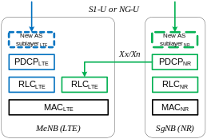
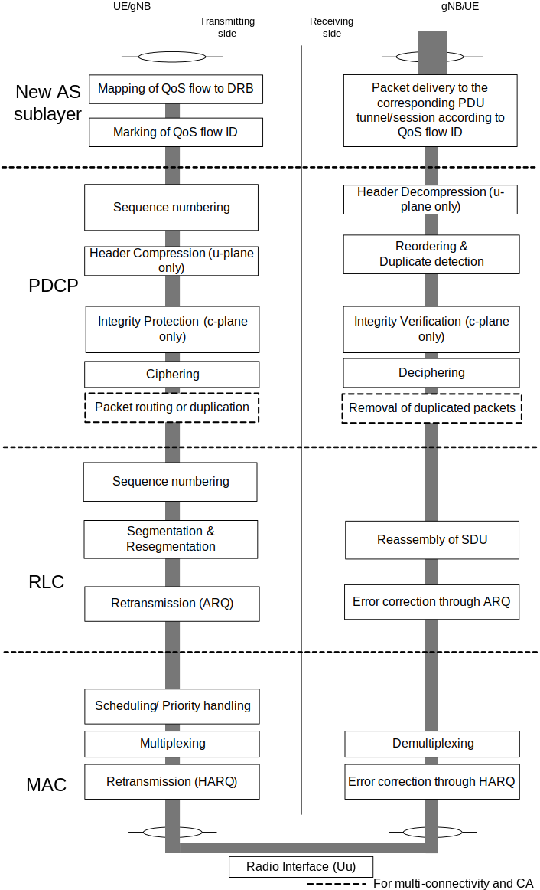
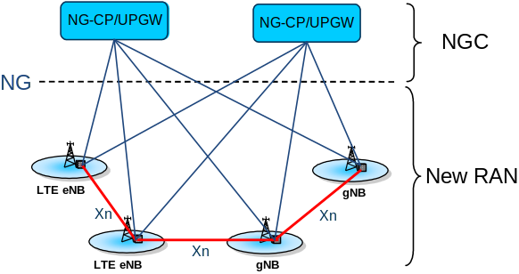

3GPP TR 38.912 V17.0.0 (2022-03)
Technical Specification
3rd Generation Partnership Project;
Technical Specification Group Radio Access Network;
Study on New Radio (NR) access technology
(Release 17)
The present document has been developed within the 3rd Generation
Partnership Project (3GPP TM) and may be further elaborated
for the purposes of 3GPP..
The present document has not been subject to any approval process by the
3GPP Organizational Partners and shall not be implemented.
This Specification is provided for future development work within 3GPP
only. The Organizational Partners accept no liability for any use of
this Specification.
Specifications and Reports for implementation of the 3GPP TM
system should be obtained via the 3GPP Organizational Partners'
Publications Offices.
Keywords
RAN, 5G, NR
3GPP
Postal address
3GPP support office address
650 Route des Lucioles - Sophia Antipolis
Valbonne - FRANCE
Tel.: +33 4 92 94 42 00 Fax: +33 4 93 65 47 16
Internet
Copyright Notification
No part may be reproduced except as authorized by written
permission.
The copyright and the foregoing restriction extend to reproduction in
all media.
© 2022, 3GPP Organizational Partners (ARIB, ATIS, CCSA, ETSI, TSDSI, TTA, TTC).
All rights reserved.
UMTS™ is a Trade Mark of ETSI registered for the benefit of its members
3GPP™ is a Trade Mark of ETSI registered for the benefit of its
Members and of the 3GPP Organizational Partners
LTE™ is a Trade Mark of ETSI registered for the benefit of its Members
and of the 3GPP Organizational Partners
GSM® and the GSM logo are registered and owned by the GSM Association
Foreword 6
1 Scope 7
2 References 7
3 Definitions, symbols and abbreviations 8
3.1 Definitions 8
3.2 Symbols 8
3.3 Abbreviations 8
4 Introduction 9
5 Deployment scenario 9
6 Forward compatibility 11
7 Radio interface protocol architecture for next generation radio 11
7.1 User plane 11
7.1.1 User plane protocol stack for NR 11
7.1.2 Bearer types for Dual Connectivity between LTE and NR 11
7.2 Control plane 13
7.2.1 Control plane protocol stack for NR 13
7.2.2 Control plane architecture for Dual Connectivity between LTE and NR 13
7.2.2.1 UE capability coordination between LTE and NR 14
8 Physical layer for next generation radio 15
8.1 Numerologies and frame structure 15
8.2 Downlink transmission scheme 17
8.2.1 Basic transmission scheme 17
8.2.1.1 Modulation scheme 17
8.2.1.2 Physical layer channel 17
8.2.1.2.1 Physical resource multiplexing 17
8.2.1.2.2 Data channel 17
8.2.1.2.3 Control channel 18
8.2.1.3 Waveform 18
8.2.1.4 Multiple access scheme 19
8.2.1.5 Channel coding 19
8.2.1.5.1 LDPC 19
8.2.1.5.2 Polar coding 20
8.2.1.6 Multi-antenna scheme 20
8.2.1.6.1 Beam management 20
8.2.1.6.2 MIMO schemes 23
8.2.1.6.3 CSI measurement and reporting 23
8.2.1.6.4 Reference signal related to multi-antenna scheme 27
8.2.1.6.4.1 CSI-RS 27
8.2.1.6.4.2 DM-RS 28
8.2.1.6.4.3 Phase-tracking RS (PT-RS) 28
8.2.1.6.5 Quasi-colocation (QCL) 28
8.2.1.6.6 Network coordination and advanced receiver 29
8.2.2 Physical layer procedure 29
8.2.2.1 Scheduling 29
8.2.2.2 HARQ 29
8.2.2.3 Initial access and mobility 30
8.2.2.3.1 Synchronization signal and DL broadcast signal/channel structure 30
8.2.2.3.2 Mobility 31
8.2.2.3.3 Paging 31
8.3 Uplink transmission scheme 31
8.3.1 Basic transmission scheme 31
8.3.1.1 Modulation scheme 31
8.3.1.2 Physical layer channel 32
8.3.1.2.1 Data channel 32
8.3.1.2.2 Control channel 32
8.3.1.3 Waveform 33
8.3.1.4 Multiple access scheme 33
8.3.1.5 Channel coding 33
8.3.1.5.1 LDPC 34
8.3.1.5.2 Polar coding 34
8.3.1.6 Multi-antenna scheme 34
8.3.1.6.1 Beam management and CSI acquisition 34
8.3.1.6.2 MIMO schemes 34
8.3.1.6.3 Reference signal related to multi-antenna scheme 35
8.3.1.6.3.1 SRS 35
8.3.1.6.3.2 PT-RS 36
8.3.2 Physical channel procedure 36
8.3.2.1 Random access procedure 36
8.3.2.1.1 Preamble 36
8.3.2.1.2 Procedure 37
8.3.2.2 Scheduling 37
8.3.2.3 Power control 38
8.3.2.4 HARQ 38
8.4 Duplexing 38
8.5 LTE-NR Co-existence 38
8.6 Carrier Aggregation / Dual Connectivity 39
9 Layer 2 and RRC for next generation radio 39
9.1 Overview of Layer 2 functions 39
9.2 MAC Sublayer 41
9.3 RLC Sublayer 41
9.4 PDCP Sublayer 41
9.5 New AS sublayer 42
9.6 Overview of Layer 2 data flow 42
9.7 Numerologies and TTI durations 42
9.8 RRC 43
9.8.1 Functions 43
9.8.2 UE states and state transitions 43
9.8.2.1 RAN-based notification are management 45
9.8.3 System information handling 45
9.8.3.1 Dual Connectivity between LTE and NR 46
9.8.4 Measurements 46
9.8.4.1 Dual Connectivity between LTE and NR 46
9.8.5 Access control 47
9.8.6 UE capability retrieval framework 47
10 Architecture for next generation RAN 47
10.1 RAN-CN functional split 47
10.2 Overall architecture 48
10.3 Interfaces 49
10.3.1 RAN-CN interface 49
10.3.1.1 General principles 49
10.3.1.2 NG Interface Functions 49
10.3.1.3 NG Interface Architecture 50
10.3.1.4 NG Control Plane 50
10.3.1.5 NG User Plane 50
10.3.2 RAN internal interface 51
10.3.2.1 Xn Interface 51
10.3.2.1.1 General principles 51
10.3.2.1.2 Xn Interface Functions 51
10.3.2.1.3 Xn Control Plane 52
10.3.2.1.4 Xn User Plane 52
11 QoS 53
11.1 QoS architecture in NR and NextGen Core 53
11.2 Dual Connectivity between LTE and NR via EPC 55
12 Support for Network Slicing 55
13 Key higher layer and network procedures 55
13.1 Initial access 55
13.1.1 Cell selection 55
13.1.2 Random access procedure 56
13.2 Mobility 56
13.2.1 Intra-RAT 56
13.2.1.1 UE based mobility 56
13.2.1.1.1 Cell reselection 56
13.2.1.1.2 Paging 57
13.2.1.2 Network controlled mobility 57
13.2.2 Inter-RAT 58
13.2.3 Mobility related to Dual Connectivity between LTE and NR 60
13.3 Dual Connectivity between NR and LTE 61
13.3.1 General 61
13.3.2 Option 3/3a/3x 61
13.3.2.1 General principles for Xx interface 61
13.3.2.2 Architectural aspects 61
13.3.2.3 Procedural aspects 62
13.3.3 Option 4/4a 62
13.3.3.1 Architectural aspects 62
13.3.3.2 Procedural aspects 63
13.3.4 Option 7/7a/7x 63
13.3.4.1 Architectural aspects 63
13.3.4.2 Procedural aspects 64
13.4 PDU Session Management 64
13.4.1 Session Setup 64
13.4.2 Session Modification 65
13.4.3 Session Release 65
14 Radio transmission/reception 66
14.1 Potential spectrum 66
14.2 Co-existence consideration 67
14.3 UE/BS RF feasibility 67
14.3.1 Common requirements for UE and BS 67
14.3.1.1 Subcarrier spacing 68
14.3.1.2 Maximum channel bandwidth 68
14.3.1.3 Flexible channel bandwidth 68
14.3.1.4 UE transmission bandwidth configuration adaptation 68
14.3.1.5 Spectrum Utilization 69
14.3.2 UE RF requirements 69
14.3.2.1 Wide frequency range of up to 52.6 GHz handling 69
14.3.2.2 Stand-Alone and Non-Stand-Alone perspective 69
14.3.2.3 Multiple numerologies within one carrier 70
14.3.3 BS RF requirements 70
14.3.3.1 Wide frequency range of up to 52.6 GHz handling 70
14.3.3.2 Multiple numerologies within one carrier 71
14.3.3.3 Beam related NR BS specific requirement 71
15 Conclusions 71
Annex A: SI description for Study on New Radio (NR) Access Technology 72
Justification 72
Objective of SI 72
Impacts 74
Annex B: Change history 74
This Technical Specification has been produced by the 3rd Generation Partnership Project (3GPP).
The contents of the present document are subject to continuing work within the TSG and may change following formal TSG approval. Should the TSG modify the contents of the present document, it will be re-released by the TSG with an identifying change of release date and an increase in version number as follows:
Version x.y.z
where:
x the first digit:
1 presented to TSG for information;
2 presented to TSG for approval;
3 or greater indicates TSG approved document under change control.
y the second digit is incremented for all changes of substance, i.e. technical enhancements, corrections, updates, etc.
z the third digit is incremented when editorial only changes have been incorporated in the document.
This document is intended to gather all technical outcome of the study item "Next Generation New Radio (NR) Access Technology" (see Annex A).
This activity involves the Radio Access work area of the 3GPP studies and has impacts both on the Mobile Equipment and Access Network of the 3GPP systems.
The following documents contain provisions which, through reference in this text, constitute provisions of the present document.
- References are either specific (identified by date of publication, edition number, version number, etc.) or non‑specific.
- For a specific reference, subsequent revisions do not apply.
- For a non-specific reference, the latest version applies. In the case of a reference to a 3GPP document (including a GSM document), a non-specific reference implicitly refers to the latest version of that document in the same Release as the present document.
[1] 3GPP TR 21.905: "Vocabulary for 3GPP Specifications".
[2] Void.
[3] Void.
[4] Void.
[5] Void.
[6] Void.
[7] 3GPP TS 36.304: "Evolved Universal Terrestrial Radio Access (E-UTRA); User Equipment (UE) procedures in idle mode".
[8] 3GPP TS 36.331: "Evolved Universal Terrestrial Radio Access (E-UTRA); Radio Resource Control (RRC); Protocol specification".
[9] 3GPP TR 38.913: "Study on Scenarios and Requirements for Next Generation Access Technologies".
[10] 3GPP TS 36.401: "Evolved Universal Terrestrial Radio Access Network (E-UTRAN); Architecture description".
[11] Void.
[12] 3GPP TS 36.300: "Evolved Universal Terrestrial Radio Access (E-UTRA) and Evolved Universal Terrestrial Radio Access Network (E-UTRAN); Overall description; Stage 2".
[13] 3GPP TS 36.423: "Evolved Universal Terrestrial Radio Access Network (E-UTRAN); X2 application protocol (X2AP)".
[14] 3GPP TS 38.300: "NR; NR and NG-RAN overall description; Stage-2".
For the purposes of the present document, the terms and definitions given in 3GPP TR 21.905 [1] and the following apply. A term defined in the present document takes precedence over the definition of the same term, if any, in 3GPP TR 21.905 [1].
example: text used to clarify abstract rules by applying them literally.
Multi-Connectivity: Mode of operation whereby a multiple Rx/Tx UE in the connected mode is configured to utilise radio resources amongst E-UTRA and/or NR provided by multiple distinct schedulers connected via non-ideal backhaul.
NextGen Core: (=NGC) Core Network for Next Generation System.
NG: The interface between a gNB and a NextGen Core.
NR-PSS/SSS: Primary and Secondary synchronisation signal for NR.
Transmission Reception Point: Antenna array with one or more antenna elements available to the network located at a specific geographical location for a specific area.
NOTE: The RAN Architecture terminology (New RAN, NGC, eLTE eNB) of the present document was only used in the Rel-14 Study Item phase. For the RAN Architecture terminology used in Rel-15 and beyond, see TS 38.300 [14].
For the purposes of the present document, the following symbols apply:
KeNB eNB key
LTB,CRC Number of bits for TB-level CRC(Cyclic Redundancy Check) before code block segmentation
S-KeNB SeNB key
Ts Basic time unit
For the purposes of the present document, the abbreviations given in 3GPP TR 21.905 [1] and the following apply. An abbreviation defined in the present document takes precedence over the definition of the same abbreviation, if any, in 3GPP TR 21.905 [1].
AAS Active Antenna array System
CB Code Block
CBG Code Block Group
CBW Channel BandWidth
CC Chase Combining, Component Carrier
CCE Control Channel Element
CP Cyclic Prefix, Control Plane
CSI-RS Channel State Information
DC Dual Connectivity
DCI Downlink Control Information
DM-RS DeModulation-Reference Signal
eIMTA Enhanced Interference Management and Traffic Adaptation
EIRP Equivalent Isotropically Radiated Power
eMBB Enhanced Mobile BroadBand
eV2X Enhanced Vehicule to Everything
gNB gNode B (supporting NR and connectivity to NGC)
GT Guard Time
IMR Interference Measurement Resource
IR Incremental Redundancy
LBRM Limited Buffer Rate Matching
LDPC Low-Density Parity-Check
MCG Master Cell Group
MCL Minimum Coupling Loss
MCS Modulation Coding Scheme
MIB Master Information Block
MU-MIMO Multi-User Multiple Input Multiple Output
mMTC Massive Machine Type Communication
NGC Next Generation Core Network
NG-U NG for the user plane
NR New Radio
NR-PSS New Radio-Primary Synchronization Signal
NR-SSS New Radio-Secondary Synchronization Signal
NZP Non Zero Power
OTA Over The Air
PMI Precoding Matrix Indicator
PSCell Primary SCell
PT-RS Phase Tracking Reference Signal
QCL Quasi-colocation
QC-LDPC Quasi-Cyclic Low Density Parity Check
RAR Random Access Response
RE Resource Element
REG Resource Element Group
SAR Specific Absorption Rate
SCG Secondary Cell Group
SeNB Secondary eNB
SRI SRS Resource Indicator
SRS Sounding Reference Signal
TB Transport Block
TRI Transmit Rank Indicator
TRxP Transmission Reception Point
UCI Uplink Control Information
UPGW User Plane Gateway
URLLC Ultra-Reliable and Low Latency Communications
At the 3GPP TSG RAN #71 meeting, the Study Item description on " New SID Proposal: Study on New Radio Access Technology " was approved (see Annex A). The study item covers technology components to be considered for new radio access technologies, e.g. to fulfil the requirements on IMT-2020. This technical report covers all RAN aspects of these technology components.
A very large set of deployment scenarios (deployment scenarios for eMBB, mMTC, URLLC, eV2X) are foreseen, as described in 38.913 [9] section 6.1:
In order to enable the large number of possibilities, the RAN architecture will support the following:
- Non-centralised deployment: In this scenario, the full NR protocol stack is supported at the gNB e.g. in a macro deployment or indoor hotspot environment (could be public or enterprise).
- Centralized deployment: In this scenario, the upper layers of the NR radio stacks are centralized at the Central Unit. Different protocol split options between Central Unit and lower layers of gNB nodes may be possible. The functional split between the Central Unit and lower layers of gNB nodes may depend on the transport layer. High performance transport between the Central Unit and lower layers of gNB nodes, e.g. optical networks, can enable advanced CoMP schemes and scheduling optimization, which could be useful in high capacity scenarios, or scenarios where cross cell coordination is beneficial. Low performance transport between the Central Unit and lower layers of gNB nodes can enable the higher protocol layers of the NR radio stacks to be supported in the Central Unit, since the higher protocol layers have lower performance requirements on the transport layer in terms of bandwidth, delay, synchronization and jitter.
- Co-sited deployment with E-UTRA: In this scenario the NR functionality is co-sited with E-UTRA functionality either as part of the same base station or as multiple base stations at the same site. Co-sited deployment can be applicable in all NR deployment scenarios e.g. Urban Macro. In this scenario it is desirable to fully utilise all spectrum resources assigned to both RATs by means of load balancing or connectivity via multiple RATs (e.g. utilising lower frequencies as coverage layer for users on cell edge).
- Shared RAN deployment: NR should support shared RAN deployments, supporting multiple hosted Core Operators. The Shared RAN could cover large geographical areas, as in the case of national or regional network sharing. The Shared RAN coverage could also be heterogeneous, i.e. limited to few or many smaller areas, for example in the case of Shared in-building RANs. A shared RAN should be able to efficiently interoperate with a non-shared RAN. Each Core Operator may have their own non-shared RAN serving areas adjacent to the Shared RAN. Mobility between the non-shared RAN and the Shared RAN shall be supported in a way at least as good as for LTE. The Shared RAN may (as for the case of LTE) operate either on shared spectrum or on the spectrum of each hosted Operator.
The RAN architecture will support following scenarios for connectivity between RAN consisting of E-UTRA and NR, and a CN consisting of an NGC and an EPC. The connectivity scenario in figure 5-1 includes support for deployment with LTE eNB connected to the EPC with Non-standalone NR. The connectivity scenario in figure 5-2 includes support for deployment with gNB connected to the NGC either as standalone or with Non-standalone E-UTRA, and deployment with LTE eNB connected to the NGC either as standalone or with Non-standalone NR.
Figure 5-1: E-UTRA and NR connected to the EPC
Figure 5-2: E-UTRA and NR connected to the NGC
Forward compatibility of NR shall ensure smooth introduction of future services and features while efficient access of the earlier services and UEs in the same spectrum is still ensured.
In order to ensure forward compatibility of NR, explicit signaling to NR UEs can indicate reserved resources. At least some reserved resources are indicated by using at least RRC signaling.
For RAN3 RAN internal interfaces and the RAN-CN interface, forwards compatibility of the protocol is assured by extension mechanisms such as those described in chapter 10 of 25- and 36-series application protocol specifications on message and IE level whenever existing messages are reused.
To support tight interworking between LTE and NR, a technology of aggregating data flows between the two RATs is studied based on Dual Connectivity (DC) for LTE [12]. In DC between LTE and NR, both (e)LTE eNB and NR gNB can act as a master node as described in sub-clause 4.1.2.1, 4.1.2.2 and 4.1.2.3. It is assumed that DC between LTE and NR supports the deployment scenario where LTE eNB is not synchronised with NR gNB.
For NR, a technology of aggregating NR carriers is studied. Both lower layer aggregation like Carrier Aggregation (CA) for LTE (see [12]) and upper layer aggregation like DC are investigated. From layer 2/3 point of view, aggregation of carriers with different numerologies is supported in NR. Radio interface protocols for NR are designed flexibly to allow the possibility of intra-frequency DC and Multi-Connectivity.
In this sub-clause, the radio interface protocol architecture of NR is described for the user plane and the control plane encompassing DC between LTE and NR, and lower/higher layer aggregation of NR carriers.
The figure below shows the protocol stack for the user plane, where PDCP, RLC and MAC sublayers (terminated in gNB on the network side) perform the functions listed for the user plane in sub-clause 9.2, 9.3 and 9.4, respectively. In addition, a new AS sublayer is introduced above PDCP as described in sub-clause 9.5.
Figure 7.1.1-1: User plane protocol stack
NOTE: Terminology of each layer 2 sublayer could be changed in the normative phase.
The following three types of bearer are supported for Dual Connectivity between LTE and NR regardless of the connected CN, except for the split bearer via SCG where the master node is gNB (i.e. NR):
- Split bearer via MCG as illustrated in Figure 7.1.2-1 (similar to option 3C);
- SCG bearer as illustrated in Figure 7.1.2-2 (similar to option 1A);
- Split bearer via SCG as illustrated in Figure 7.1.2-3, where the split occurs in the secondary node.
Figure 7.1.2-1: Split bearer via MCG

Figure 7.1.2-2: SCG bearer

Figure 7.1.2-3: Split bearer via SCG
Split bearers support RLC UM mode and RLC AM mode. With regards to the reconfiguration of bearer types, the following cases are supported:
- reconfiguration between an SCG bearer and an MCG bearer;
- reconfiguration of an SCG bearer between two secondary nodes;
- reconfiguration between an MCG bearer and an MCG split bearer.
The figure below shows the protocol stack for the control plane, where:
- PDCP, RLC and MAC sublayers (terminated in gNB on the network side) perform the functions listed in sub-clause 9.2, 9.3 and 9.4, respectively;
- RRC (terminated in gNB on the network side) performs the functions listed in sub-clause 9.8.1;
- NAS control protocol (terminated in NG-CP on the network side) performs the functions.
Figure 7.2.1-1: Control plane protocol stack
In DC between LTE and NR, the secondary node owns its radio resources and is primary responsible for allocating radio resources of it cells. To enable this, some coordination is required between the master node and the secondary node no matter whether the master RAT is LTE and the secondary RAT is NR, or vice versa.
The following RRC functions are at least relevant when (re)configuring secondary node cells to the UE in coordination with the master node:
- Common radio resource configurations on secondary node cells;
- Dedicated radio resource configurations on secondary node cells;
- Measurement and mobility control for secondary node cells.
When DC between LTE and NR is configured for a UE, the UE has a single RRC state machine based on the master node RAT. In this operation, single C-plane connection is established towards CN. With these principles, Figure 7.2.2-1 illustrates the C-plane architectures for DC between LTE and NR. Each node has its own RRC entity which can generate RRC PDUs and inter-node PDUs using ASN.1. RRC PDUs and inter-node PDUs generated by the secondary node are embedded with RRC PDUs generated by the master node which are transported via the master node to the UE for the first configuration, and for the secondary node RRC reconfiguration requiring the master node RRC reconfiguration and vice versa. The master node needs not to modify or add the UE configurations for the secondary node.
The UE can be configured to establish an SRB in SCG to enable RRC PDUs for the secondary node to be sent directly between the UE and the secondary node. RRC PDUs for the secondary node can be transported directly to the UE for the secondary node RRC reconfiguration not requiring any coordination with the master node. Alternatively, it can be delivered embedded within RRC PDUs generated by the master node, which is up to the network implementation. Measurement reporting for mobility within the secondary node can be done directly from the UE to the secondary node if an SCG SRB is configured. Support of the direct RRC PDU transmission between the UE and the secondary node does not imply that the UE has to do any reordering of RRC messages.
Split SRB is supported for DC between LTE and NR no matter which RAT is the master. In other words, C-plane packet duplication is supported in LTE/NR PDCP.
Figure 7.2.2-1: C-plane architecture for Dual Connectivity between LTE and NR
For a UE supporting both LTE and NR, the UE reports its capability information for both LTE and NR respectively, which are independent with each other. In other words, a node of one RAT needs not to look at and not to use the capabilities of the other RAT. In case where the secondary node is NR, gNB can format NR RRC PDUs for the UE configuration. Nonetheless, this principle does not preclude that the capabilities of one RAT might contain some information related to the other RAT, e.g. at least inter-RAT measurement capabilities.
In addition, if the UE supports DC between LTE and NR, the following principles are additionally taken into account:
1. LTE capability changes;
2. NR capability reporting supports independent capability reporting in accordance with the principle described in this sub-clause.
3. Capability dependency between LTE and NR.
- Type I capabilities: The use of the capability is isolated to the RAT.
- Type II capabilities: The use of the capability in one RAT has impacts to the other RAT but is not understood by the NW side of the other RAT.
- Type III capabilities: The use of the capability in one RAT has impacts to the other RAT and is understood by the NW side of the other RAT.
For Type I capabilities, no coordination between LTE and NR is required. The secondary RAT specific capabilities are merely forwarded by the master node to the secondary node, following the baseline DC within LTE. Some capabilities (e.g. RF capability) are coordinated using Xx/Xn and involve a reconfiguration of the UE. The configuration of the UE does not exceed its capabilities. Some capabilities (e.g. buffer size) are coordinated using Xx/Xn and will not involve a reconfiguration of the UE. In this case, the ongoing operation of the network does not exceed the UE capabilities.
NOTE 1: The above type definitions are guidance for the purpose of discussion in the SI and early part of the WI phase. They will not limit further discussion and will not be captured in the specifications.
The UE capability coordination between LTE and NR is applied for all the deployment scenarios described in sub-clause 4.1.2.1, 4.1.2.2 and 4.1.2.3 except for the scenarios of single connectivity. At least, the following UE capabilities need to be coordinated across the master node and the secondary node:
- Band combinations across RATs;
- Layer-2 buffer.
For the UE capabilities requiring coordination between LTE and NR, only two nodes (i.e. one eNB and one gNB) need to be involved. Nevertheless, the forward compatibility towards multiple node connectivity can be considered as well. It is up to the master node to decide on how to resolve the dependency between LTE and NR. The secondary node can initiate the re-negotiation of the UE capability. Upon receiving the re-negotiation request from the secondary node, it is up to the master node to make the final decision.
Multiple numerologies are supported. A numerology is defined by sub-carrier spacing and CP overhead. Multiple subcarrier spacings can be derived by scaling a basic subcarrier spacing by an integer N. The numerology used can be selected independently of the frequency band although it is assumed not to use a very low subcarrier spacing at very high carrier frequencies. Flexible network and UE channel bandwidth is supported.
From RAN1 specification perspective, maximum channel bandwidth per NR carrier is 400MHz in Rel-15. Note that all details for channel bandwidth at least up to 100 MHz per NR carrier are to be specified in Rel-15. At least for single numerology case, candidates of the maximum number of subcarriers per NR carrier is 3300 or 6600 in Rel-15 from RAN1 specification perspective. NR channel designs should consider potential future extension of these parameters in later releases, allowing Rel-15 UE to have access to NR network on the same frequency band in later release
A subframe duration is fixed to 1ms and frame length is 10ms. Scalable numerology should allow at least from 15kHz to 480kHz subcarrier spacing. All numerologies with 15 kHz and larger subcarrier spacing, regardless of CP overhead, align on symbol boundaries every 1ms in NR carrier. More specifically, for the normal CP family, the following is adopted.
- For subcarrier spacing of 15 kHz * 2n (n is non-negative integer),
- Each symbol length (including CP) of 15 kHz subcarrier spacing equals the sum of the corresponding 2n symbols of the scaled subcarrier spacing.
- Other than the first OFDM symbol in every 0.5ms, all OFDM symbols within 0.5ms have the same size
- The first OFDM symbol in 0.5ms is longer by 16Ts (assuming 15 kHz and FFT size of 2048) compared to other OFDM symbols.
- 16 Ts is used for CP for the first symbol.
- For subcarrier spacing of 15 kHz * 2n (n is a negative integer)
- Each symbol length (including CP) of the subcarrier spacing equals the sum of the corresponding 2−n symbols of 15 kHz.
Resource defined by one subcarrier and one symbol is called as resource element (RE).
The physical layer design supports an extended CP. Extended CP will be only one in given subcarrier spacing in Rel-15. LTE scaled extended CP is supported at least for 60 kHz subcarrier spacing in Rel-15. The CP type can be semi-static configured with UE-specific signaling. UE supporting the extended CP may depend on UE type/capability.
The number of subcarriers per PRB is 12.
No explicit DC subcarrier is reserved both for downlink and uplink. Regarding DC present within the transmitter, DC handling of DC subcarrier in transmitter side is specified as follows:
- Receiver knows where DC subcarrier is or is informed (e.g., by specification or signaling) of where DC subcarrier is or if DC subcarrier is not present within receiver bandwidth.
- For the downlink, UE may assume transmitted DC subcarrier at the transmitter (gNB) side is modulated i.e., data is neither rate-matched nor punctured.
- Signal quality requirement (e.g., EVM) corresponding to DC subcarriers is up to RAN4.
- For the uplink, transmitted DC subcarrier at the transmitter (UE) side is modulated i.e., data is neither rate-matched nor punctured.
- Signal quality requirement (e.g., EVM) corresponding to DC subcarriers is up to RAN4.
- For the uplink, the transmitter DC subcarrier at the transmitter (UE) side should avoid collisions at least with DM-RS if possible.
- For the uplink the specification should define at least one particular subcarrier as the candidate position of DC subcarrier, e.g., DC subcarrier is located at the boundary of PRBs
- For the uplink, means for the receiver to determine DC subcarrier location should be specified.
- This involves semi-static signalling from UE and also standard specified DC subcarrier location.
- When DC subcarrier is not present, all subcarriers within the receiver bandwidth are transmitted.
Note that above DC subcarrier can be interpreted as DC subcarrier candidate.
On the other hand, at the receiver side, no special handling of the DC subcarrier(s) on the receiver side is specified in RAN1. Behavior is left to implementation, i.e., the receiver may for example puncture data received on the DC subcarrier.
A slot is defined as 7 or 14 OFDM symbols for the same subcarrier spacing of up to 60kHz with normal CP and as 14 OFDM symbols for the same subcarrier spacing higher than 60kHz with normal CP. A slot can contain all downlink, all uplink, or {at least one downlink part and at least one uplink part}. Slot aggregation is supported, i.e., data transmission can be scheduled to span one or multiple slots.
Mini-slots having the following lengths are defined.
- At least above 6 GHz, mini-slot with length 1 symbol supported.
- Lengths from 2 to slot length -1
- For URLLC, at least 2 is supported
The following should be taken into account for designing slot-level channels/signals/procedures:
- Possible occurrence of mini-slot/slot transmission(s) occupying resources scheduled for ongoing slot transmission(s) of a given carrier for the same/different UEs.
- At least one of DM-RS format/structure/configuration for slot-level data channel is re-used for mini-slot-level data channel.
- At least one of DL control channel format/structure/configuration for slot-level data scheduling is designed to be applicable to mini-slot-level data scheduling.
- At least one of UL control channel format/structure/configuration for slot-level UCI feedback is designed to be applicable to mini-slot-level UCI feedback.
Note that some UEs targeting certain use cases may not support all mini-slot lengths and all starting positions. Mini-slot can start at any OFDM symbol, at least above 6 GHz. A mini-slot contains DM-RS at position(s) relative to the start of the mini-slot.
The following targets/use-cases to design mini-slots should be taken into account.
- Support of very low latency including URLLC for certain slot lengths
- Target slot lengths are at least 1ms, 0.5ms.
- Support of finer TDM granularity of scheduling for the same/different UEs within a slot, especially if TRxP uses beam-sweeping (e.g., above 6GHz).
- NR-LTE co-existence
- Note that this use case also exists for slot-based scheduling
- Forward compatibility towards unlicensed spectrum operation
The following should be taken into account as starting point for designing mini-slotlevel channels/signals/procedures:
- Possible occurrence of mini-slot/slot transmission(s) occupying resources scheduled for ongoing slot transmission(s) of a given carrier for the same/different UEs
- DM-RS for mini-slot-level data channel is just a re-use of that for slot-level data channel
- DL control channel for mini-slot-level data scheduling is just a re-use of that for slot-level data scheduling
- UL control channel for mini-slot-level UCI feedback is just a re-use of that for slot-level UCI feedback
- Scheduling/HARQ timelines for a mini-slot can be based on scheduling/HARQ timelines for a slot
- Scheduling/HARQ timelines for a mini-slot can be based on scheduling/HARQ timelines shorter than those for a slot
At least for single carrier operation, NR should allow a UE to operate in a way where it receives at least downlink control information in a first RF bandwidth and where the UE is not expected to receive downlink control information or data in a second RF bandwidth that is larger than the first RF bandwidth within less than X µs.
QPSK, 16QAM, 64QAM and 256QAM (with the same constellation mapping as in LTE) are supported.
NR defines physical resource block (PRB) where the number of subcarriers per PRB is the same for all numerologies. Note that the number of subcarriers per PRB is 12.
Multiplexing different numerologies within a same NR carrier bandwidth (from the network perspective) is supported in TDM and/or FDM manner for both downlink and uplink. From UE perspective, multiplexing different numerologies is performed in TDM and/or FDM manner within/across (a) subframe duration(s). For subcarrier spacing of kHz, subcarriers are mapped on the subset/superset of those for subcarrier spacing of 15kHz in a nested manner in the frequency domain and the PRB grids are defined as the subset/superset of the PRB grid for subcarrier spacing of 15kHz in a nested manner in the frequency domain.
From network perspective, multiplexing of transmissions with different latency and/or reliability requirements for eMBB/URLLC in DL is supported by using the same subcarrier spacing with the same CP overhead or using different subcarrier spacing. In the specification, both approaches are to be supported. NR supports dynamic resource sharing between different latency and/or reliability requirements for eMBB/URLLC in DL. Dynamic resource sharing between URLLC and eMBB is supported by transmitting URLLC scheduled traffic where URLLC transmission may occur in resources scheduled for ongoing eMBB traffic. DL dynamic resources sharing between eMBB and URLLC is enabled without pre-emption by scheduling the eMBB and URLLC services on non-overlapping time/frequency resources (No specific specification work is expected).
NR supports indication of time and/or frequency region of impacted eMBB resources to respective eMBB UE(s).
NR supports at least functionality where for DL data scheduled for a slot, the DL data DM-RS location in time is not dynamically varying relative to the start of slot.
At least QPSK is supported for the modulation of the NR-PDCCH. For single stage DCI, modulation scheme for NR-PDCCH is only QPSK. In frequency-domain, a PRB (or a multiple of PRBs) is the resource unit size (may or may not including DM-RS) for control channel. A NR-PDCCH candidate consists of a set of NR-CCEs. A NR-CCE consists of a fixed number of resource element groups (REGs). A REG is one RB during one OFDM symbol which may or may not include DM-RS. This is at least for the case where the DL control region consists of one or a few OFDM symbol(s) of a slot or a mini-slot. At least for eMBB, in one OFDM symbol, multiple NR-CCEs cannot be transmitted on the same REG except for spatial multiplexing to different UEs (MU-MIMO).
At least for single stage DCI design, a UE monitors for downlink control information in one or more control resource sets where a control resource set is defined as a set of REGs under a given numerology. The BW for control resource set is smaller than or equal to the carrier bandwidth (up to a certain limit). The control resource set is a set of REGs within which the UE attempts to blindly decode downlink control information. The REGs may or may not be frequency contiguous. When the control resource set spans multiple OFDM symbols, a control channel candidate is mapped to multiple OFDM symbols or to a single OFDM symbol. The gNB can inform UE which control channel candidates are mapped to each subset of OFDM symbols in the control resource set. This does not preclude that UE may receive additional control information elsewhere within or outside the control resource set in the same or different OFDM symbol(s). A UE may have one or more control resource sets. NR should support dynamic reuse of at least part of resources in the control resource sets for data for the same or a different UE, at least in the frequency domain. From gNB perspective, DL control channel can be located at the first OFDM symbol(s) in a slot and/or mini-slot. UE-specific DL control information monitoring occasions at least in time domain can be configured. At least for single-stage DCI design, for slots, minimum granularity of DCI monitoring occasion is once per slot.
The time/frequency resource containing at least one search space is obtained from MIB/system information/implicitly derived from initial access information. Time/frequency resource containing additional search spaces, can be configured using dedicated RRC signaling. NR-PDCCH can be mapped contiguously or non-contiguously in frequency. Multiple control resource sets can be overlapped in frequency and time for a UE. A search space in NR is associated with a single control resource set. The search spaces in different control resources sets are defined independently. Each candidate of NR DL control channel search space is composed by K NR-CCE(s). Control search space includes at least, aggregation level(s), number of decoding candidates for each aggregation level, and the set of CCEs for each decoding candidate. The max number of blind decoding candidates for a UE is defined independently of the number of control resource sets and the number of search spaces.
NR supports a group common PDCCH carrying at least slot format related information. If the UE does not receive the group common PDCCH the UE should be able to receive at least PDCCH in a slot, at least if the gNB did not transmit the group common PDCCH. The network will inform through RRC signalling the UE whether to decode the group common PDCCH or not. Note that common does not necessarily imply common per cell. Also, the term group common PDCCH refers to a channel (either a PDCCH or a separately designed channel) that carries information intended for the group of UEs. Slot format related information and defined as information from which the UE can derive at least which symbols in a slot that are DL, UL (for Rel-15), and other, respectively. The UE will have the possibility to determine whether some blind decodings can be skipped based on information on a group common PDCCH (if present). When monitoring for a PDCCH, the UE should be able to process a detected PDCCH irrespective of whether the group common PDCCH is received or not.
UE/NR-PDCCH-specific DM-RS and shared/common RS are supported for NR-PDCCH reception. At least for beamforming, UE may assume the same precoding operation for NR-PDCCH and associated DM-RS for NR-PDCCH. The reference signals in at least one search space do not depend on the RNTI or UE-identity. In an additional search space, reference signals can be configured. A UE assumes fixed number of RS REs per REG for control channel rate matching when the REG contains RS REs. For one UE, the channel estimate obtained for one RE should be reusable across multiple blind decodings involving that RE in at least the same control resource set and type of search space (common or UE-specific).
Transmit diversity is supported for NR-PDCCH.
The starting position of downlink data in a slot can be explicitly and dynamically indicated to the UE.
OFDM-based waveform is supported. At least up to 40 GHz for eMBB and URLLC services, CP-OFDM based waveform supports spectral utilization of Y greater than that of LTE (assuming Y=90% for LTE) where Y (%) is defined as transmission bandwidth configuration / channel bandwidth * 100%. From RAN1 perspective, spectral confinement technique(s) (e.g. filtering, windowing, etc.) for a waveform at the transmitter is transparent to the receiver.
Synchronous/scheduling-based orthogonal multiple access is at least supported for DL transmissions, at least targeting for eMBB.
The channel coding scheme for data for eMBB is flexible LDPC as the single channel coding scheme for all block sizes.
The channel coding scheme for DCI for eMBB is Polar Coding (except for very small block lengths where repetition/block coding may be preferred).
Channel coding techniques for NR should support info block size K flexibility and codeword size flexibility where basic code design with rate matching (i.e., puncturing and/or repetition) supports 1-bit granularity in codeword size. Channel coding technique(s) designed for data channels of NR support both Incremental Redundancy (IR) (or similar) and Chase Combining (CC) HARQ.
Code extension of a parity-check matrix is used for IR HARQ/rate-matching support. Lower-triangular extension, which includes diagonal-extension as a special case, is used. For the QC-LDPC design, the non-zero sub-blocks have circulant weight = 1. Circulant weight is the number of superimposed circularly shifted Z×Z identity matrices. In parity check matrix design, the highest code rate (Rmax,j ) to design j-th H matrix for is Rmax,j <=8/9, where Rmax,j is the code rate of the j-th H matrix before code extension is applied (0≤ j< J). Rmax,j is the code rate after accounting for the built-in puncturing in H matrix design. Base graph for supporting Kmax has minimum code rate Rmin,kmax of approximately 1/3. Base graph for any info block sizes K has Rmin,k >= ~1/5, provided that Nmax is not exceeded. At least 20Gbps decoder information throughput with code rate 8/9 is supported.
For a given shift size Z, a QC-LDPC code can be defined by a parity check matrix which is defined by its base graph and shift values. Element 1s and 0s in the base graph is replaced by a circulant permutation matrix of size ZxZ and zero matrix of size ZxZ, respectively. The shift values of a circulant permutation matrix can be calculated by a function Pi,j = f(Vi,j, Z) where Vi,j is an integer corresponding to the (i,j)-th non-zero element in a base matrix. The shift value Pi,j is circularly shifted value from the identity matrix for the (i,j)-th non-zero element in a base matrix. The ZxZ circulant permutation matrix which shifts the ZxZ identity matrix I to the right by Pi,j times for the (i,j)-th non-zero element in a base matrix.
Shortening is applied before LDPC encoding when necessary. Built-in puncturing of systematic bits is supported for LDPC coding, i.e., at least for the initial transmission, the coded bits are taken after skipping the first Nsys,punct systematic bits.
For at least one base graph, the base matrix consists of five sub-matrices (A, B, C, D, E) as shown in Fig. 8.2.1.5.1-1. A corresponds to systematic bits. B is square and corresponds to parity bits. The first or last column may be weight 1. The non-zero value is in the last row and this row is weight 1 in B. If there is a weight 1 column, then the remaining columns contain a square matrix such that the first column has weight three. The columns after the weight three column have a dual diagonal structure (i.e., main diagonal and off diagonal). If there is no weight 1 column, B consists of only a square matrix such that the first column has weight three. The columns after the weight three column have a dual diagonal structure (i.e., main diagonal and off diagonal). C is a zero matrix. E is an identity matrix for the above base graph. These examples are shown in Fig. 8.2.1.5.1-2.
Figure 8.2.1.5.1-1: Base matrix.
Figure 8.2.1.5.1-2: Examples of dual diagonal structure.
The rate matching for LDPC code is circular buffer based (same concept as in LTE). The circular buffer is filled with an ordered sequence of systematic bits and parity bits. For IR-HARQ, each Redundancy Version (RV), RVi, is assigned a starting bit location Si on the circular buffer. For IR retransmission of RVi, the coded bits are read out sequentially from the circular buffer, starting with the bit location Si. Limited buffer rate matching (LBRM) is supported
Before code block segmentation, LTB,CRC bit TB-level CRC are attached to the end of the transport block, where LTB,CRC <=24 bits, LTB,CRC value is determined to satisfy probability of misdetection of TB error <=10-6 and, inherent error detection of LDPC codes is taken into account in determining the LTB,CRC value.
Maximum mother code size of Polar code, N=2n, is Nmax,DCI =512 for downlink control information.
In NR, beam management is defined as follows:
- Beam management: a set of L1/L2 procedures to acquire and maintain a set of TRxP(s) and/or UE beams that can be used for DL and UL transmission/reception, which include at least following aspects:
- Beam determination: for TRxP(s) or UE to select of its own Tx/Rx beam(s).
- Beam measurement: for TRxP(s) or UE to measure characteristics of received beamformed signals
- Beam reporting: for UE to report information of beamformed signal(s) based on beam measurement
- Beam sweeping: operation of covering a spatial area, with beams transmitted and/or received during a time interval in a predetermined way.
Also, the followings are defined as Tx/Rx beam correspondence at TRxP and UE:
- Tx/Rx beam correspondence at TRxP holds if at least one of the following is satisfied:
- TRxP is able to determine a TRxP Rx beam for the uplink reception based on UE’s downlink measurement on TRxP’s one or more Tx beams.
- TRxP is able to determine a TRxP Tx beam for the downlink transmission based on TRxP’s uplink measurement on TRxP’s one or more Rx beams
- Tx/Rx beam correspondence at UE holds if at least one of the following is satisfied:
- UE is able to determine a UE Tx beam for the uplink transmission based on UE’s downlink measurement on UE’s one or more Rx beams.
- UE is able to determine a UE Rx beam for the downlink reception based on TRxP’s indication based on uplink measurement on UE’s one or more Tx beams.
- Capability indication of UE beam correspondence related information to TRxP is supported.
Note that definition/terminology of Tx/Rx beam correspondence is for convenience of discussion. The detailed performance conditions are up to RAN4.
The following DL L1/L2 beam management procedures are supported within one or multiple TRxPs:
- P-1: is used to enable UE measurement on different TRxP Tx beams to support selection of TRxP Tx beams/UE Rx beam(s)
- For beamforming at TRxP, it typically includes a intra/inter-TRxP Tx beam sweep from a set of different beams. For beamforming at UE, it typically includes a UE Rx beam sweep from a set of different beams.
- P-2: is used to enable UE measurement on different TRxP Tx beams to possibly change inter/intra-TRxP Tx beam(s)
- From a possibly smaller set of beams for beam refinement than in P-1. Note that P-2 can be a special case of P-1.
- P-3: is used to enable UE measurement on the same TRxP Tx beam to change UE Rx beam in the case UE uses beamforming
At least network triggered aperiodic beam reporting is supported under P-1, P-2, and P-3 related operations.
UE measurement based on RS for beam management (at least CSI-RS) is composed of K (= total number of configured beams) beams, and UE reports measurement results of N selected Tx beams, where N is not necessarily fixed number. Note that the procedure based on RS for mobility purpose is not precluded. Reporting information at least include measurement quantities for N beam (s) and information indicating N DL Tx beam(s), if N < K. Specifically, when a UE is configured with K’ >1 non-zero power (NZP) CSI-RS resources, a UE can report N’ CRIs (CSI-RS Resource Indicator).
A UE can be configured with the following high layer parameters for beam management:
- N≥1 reporting settings, M≥1 resource settings
- The links between reporting settings and resource settings are configured in the agreed CSI measurement setting
- CSI-RS based P-1 & P-2 are supported with resource and reporting settings
- P-3 can be supported with or without reporting setting
- A reporting setting at least including
- Information indicating selected beam(s)
- L1 measurement reporting
- Time-domain behavior: e.g. aperiodic, periodic, semi-persistent
- Frequency-granularity if multiple frequency granularities are supported
- A resource setting at least including
- Time-domain behavior: e.g. aperiodic, periodic, semi-persistent
- RS type: NZP CSI-RS at least
- At least one CSI-RS resource set, with each CSI-RS resource set having K≥1 CSI-RS resources
- Some parameters of K CSI-RS resources can be the same, e.g. port number, time-domain behavior, density and periodicity if any
At least one of these two alternatives of beam reporting is supported.
- Alt 1:
- UE reports information about TRxP Tx Beam(s) that can be received using selected UE Rx beam set(s) where a Rx beam set refers to a set of UE Rx beams that are used for receiving a DL signal. Note that it is UE implementation issues on how to construct the Rx beam set. One example is that each of Rx beam in a UE Rx beam set corresponds to a selected Rx beam in each panel. For UEs with more than one UE Rx beam sets, the UE can report TRxP Tx Beam(s) and an identifier of the associated UE Rx beam set per reported TX beam(s).
- NOTE: Different TRxP Tx beams reported for the same Rx beam set can be received simultaneously at the UE.
- NOTE: Different TRxP TX beams reported for different UE Rx beam set may not be possible to be received simultaneously at the UE
- Alt 2:
- UE reports information about TRxP Tx Beam(s) per UE antenna group basis where UE antenna group refers to receive UE antenna panel or subarray. For UEs with more than one UE antenna group, the UE can report TRxP Tx Beam(s) and an identifier of the associated UE antenna group per reported TX beam.
- NOTE: Different TX beams reported for different antenna groups can be received simultaneously at the UE.
- NOTE: Different TX beams reported for the same UE antenna group may not be possible to be received simultaneously at the UE
NR also supports the following beam reporting considering L groups where L>=1 and each group refers to a Rx beam set (Alt1) or a UE antenna group (Alt2) depending on which alternative is adopted. For each group l, UE reports at least the following information:
- Information indicating group at least for some cases
- Measurement quantities for Nl beam (s)
- Support L1 RSRP and CSI report (when CSI-RS is for CSI acquisition)
- Information indicating Nl DL Tx beam(s) when applicable
This group based beam reporting is configurable per UE basis. This group based beam reporting can be turned off per UE basis e.g., when L=1 or Nl=1. Note that no group identifier is reported when it is turned off.
NR supports that UE can trigger mechanism to recover from beam failure. Beam failure event occurs when the quality of beam pair link(s) of an associated control channel falls low enough (e.g. comparison with a threshold, time-out of an associated timer). Mechanism to recover from beam failure is triggered when beam failure occurs. Note that here the beam pair link is used for convenience, and may or may not be used in specification. Network explicitly configures to UE with resources for UL transmission of signals for recovery purpose. Configurations of resources are supported where the base station is listening from all or partial directions, e.g., random access region. The UL transmission/resources to report beam failure can be located in the same time instance as PRACH (resources orthogonal to PRACH resources) or at a time instance (configurable for a UE) different from PRACH. Transmission of DL signal is supported for allowing the UE to monitor the beams for identifying new potential beams.
NR supports beam management with and without beam-related indication. When beam-related indication is provided, information pertaining to UE-side beamforming/receiving procedure used for CSI-RS-based measurement can be indicated through QCL to UE. NR supports using the same or different beams on control channel and the corresponding data channel transmissions.
For NR-PDCCH transmission supporting robustness against beam pair link blocking, UE can be configured to monitor NR-PDCCH on M beam pair links simultaneously, where M≥1 and the maximum value of M may depend at least on UE capability. UE can be configured to monitor NR-PDCCH on different beam pair link(s) in different NR-PDCCH OFDM symbols. Parameters related to UE Rx beam setting for monitoring NR-PDCCH on multiple beam pair links are configured by higher layer signaling or MAC CE and/or considered in the search space design. At least, NR supports indication of spatial QCL assumption between an DL RS antenna port(s), and DL RS antenna port(s) for demodulation of DL control channel. Candidate signaling methods for beam indication for a NR-PDCCH (i.e. configuration method to monitor NR-PDCCH) are MAC CE signaling, RRC signaling, DCI signaling, specification-transparent and/or implicit method, and combination of these signaling methods. Note that indication may not be needed for some cases.
For reception of unicast DL data channel, NR supports indication of spatial QCL assumption between DL RS antenna port(s) and DM-RS antenna port(s) of DL data channel. Information indicating the RS antenna port(s) is indicated via DCI (downlink grants). The information indicates the RS antenna port(s) which is QCL-ed with DM-RS antenna port(s). Different set of DM-RS antenna port(s) for the DL data channel can be indicated as QCL with different set of RS antenna port(s). Note that indication may not be needed for some cases.
For NR, the number of codewords per PDSCH assignment per UE is 1 codeword for 1 to 4-layer transmission and 2 codewords for 5 to 8-layer transmission.
DL DM-RS based spatial multiplexing (SU-MIMO/MU-MIMO) is supported. At least, the 8 orthogonal DL DM-RS ports are supported for SU-MIMO and maximum 12 orthogonal DL DM-RS ports are supported for MU-MIMO. At least the following DM-RS based DL MIMO transmissions are supported for data in NR.
- Scheme 1: Closed-loop transmission where data and DM-RS are transmitted with the same precoding matrix
- Demodulation of data at the UE does not require knowledge of the precoding matrix used at the transmitter
- Note: spatial multiplexing and rank-1 are included
- Scheme 2: Open loop and Semi-open loop transmissions where data and DM-RS may or may not be restricted to be transmitted with the same precoding matrix
- Demodulation of data at the UE may or may not require knowledge of the relation between DM-RS ports and data layers
- Note: DM-RS can be precoded or not precoded
For the downlink data, at least a Precoding Resource block Group (PRG) size for PRB bundling equal to a specified value is supported. Configurable PRG size is also supported for data DM-RS.
Dynamic switching between transmission methods/schemes is supported. The following two sets of transmission parameters are at least supported.
- Transmission parameter set 1: parameters configured
- For default transmission scheme, specify default values of parameters in the Transmission parameter set 1
- Note that depending on parameter settings in transmission parameter set 1, the size of transmission parameter set 2, i.e. DCI size, may vary.
- Transmission parameter set 2: parameters indicated by physical layer (e.g. NR PDCCH channel)
- Note: some transmission parameter may belong to both set-1 and set-2
Downlink transmission scheme(s) achieving diversity gain at least for some control information transmission is supported.
For NR, DL CSI measurement with X antenna ports is supported. At least for CSI acquisition, NR supports CSI-RS and SRS.
NR supports aperiodic, semi-persistent, and periodic CSI reporting.
- Periodic CSI reporting
- It can be configured by higher layer. Higher-layer configuration includes at least reporting periodicity and timing offset.
- Semi-persistent CSI reporting
- Configuration of CSI reporting can be activated or de-activated.
CSI reporting with two types of spatial information feedback is supported.
- Type I feedback: Normal
- Type I feedback is codebook-based PMI feedback with normal spatial resolution. PMI codebook has at least two stages, i.e., W = W1W2 where W1 codebook comprises of beam groups/vectors.
- Type I feedback supports at least the following (DL) CSI reporting parameters.
- Resource selection indicator (Examples for further study are reference signal resource, port, reference signal sequence, beam)
- RI (rank indicator)
- PMI (precoding matrix indicator)
- Channel quality feedback
- At least, for single panel case, codebook-based PMI feedback has two-stage, i.e., W=W1W2,
- At least for type I CSI feedback, support multi-panel scenarios by having co-phasing factor across panels.
- Alt1: only wideband co-phasing factor across panels
- Alt2: wideband and subband co-phasing factor across panels
- Type II feedback: Enhanced
- Explicit feedback and/or codebook-based feedback with higher spatial resolution
- At least, one scheme is supported from the following Category 1, 2, and/or 3 for Type II CSI.
- Category 1: precoder feedback based on linear combination codebook
- Dual-stage W = W1W2 codebook
- W1 consists of a set of L orthogonal beams taken from 2D DFT beams
- The set of L beams is selected out of a basis composed of oversampled 2D DFT beams
- L ∈{2, 3, 4} (L is configurable)
- Beam selection is wideband
- W2: L beams are combined in W2 with common W1
- Subband reporting of phase quantization of beam combining coefficients
- Configurable between QPSK and 8-PSK phase related information quantization
- Beam amplitude scaling quantization can be configured for wideband or subband reporting
- Category 2: covariance matrix feedback
- The feedback of channel covariance matrix is long term and wideband
- A quantized/compressed version of covariance matrix is reported by the UE
- Quantization/compression is based on a set of M orthogonal basis vectors
- Reporting can include indicators of the M basis vectors along with a set of coefficients
- Other quantized/compressed versions of channel covariance matrix are not precluded
- Category 3: Hybrid CSI feedback
- Type II Category 1 or 2 CSI codebook can be used in conjunction with LTE-Class-B-type-like CSI feedback (e.g. based on port selection/combination codebook)
- The LTE-Class-B-type-like CSI feedback can be based on either Type I or Type II CSI codebook
For Type I and II, CSI feedback per subband as well as partial band and/or wideband feedback are supported. For Type I and II, beam-related feedback can be also included. For CSI reporting for a component carrier, at least three different frequency granularities are supported.
- Wideband CSI
- Wideband size is determined by UE RF capability of receiving DL signal. Location of wideband could be configurable by network. For example, wideband CSI is used for analog beam management at least.
- Partial band CSI
- Alt1. UE-specifically configurable bandwidth
- Alt2. The size is determined by the composition of numerologies or scheduling time units within the UE-specific wideband.
- Applicable only when different numerology or scheduling time unit are multiplexed within wideband.
- For example, partial band CSI is used for analogue beam management and for managing CSI per service at least.
- Subband CSI
- The band size is determined by dividing wideband or partial band to multiple bands. For example, subband CSI is used for frequency selective scheduling and subband precoding at least.
With regard to relating CSI-RS transmission and CSI reporting, the following combinations are supported at least
- For periodic CSI-RS,
- Semi-persistent CSI reporting is activated/deactivated by MAC CE and/or DCI
- Aperiodic CSI reporting is triggered by DCI
- For semi-persistent CSI-RS,
- Periodic CSI reporting is not supported
- Semi-persistent CSI reporting is activated/deactivated by MAC CE and/or DCI
- Semi-persistent CSI-RS is activated/deactivated by MAC CE and/or DCI
- Aperiodic CSI reporting is triggered by DCI
- Semi-persistent CSI-RS is activated/deactivated by MAC CE and/or DCI
- For aperiodic CSI-RS,
- Periodic CSI reporting is not supported
- Aperiodic CSI reporting is triggered by DCI
- Aperiodic CSI-RS is triggered by DCI and/or MAC CE
Note that it is possible to dynamically trigger RS and reports through links in the measurement setting. To support combinations above more flexibly, NR should allow independent control of CSI-RS indication and CSI reporting indication timings. The indication may refer to triggering, activation, and deactivation depending on type of RS/reporting. Also, NR supports mechanism(s) to trigger aperiodic CSI-RS and aperiodic CSI reporting simultaneously. For aperiodic CSI-RS timing offset X, support X=0 at least, if aperiodic CSI-RS triggering is done by DCI. Note that aperiodic CSI-RS timing offset X refers to the time gap between aperiodic CSI-RS triggering and aperiodic CSI-RS transmission with regard to the number of slots. For CSI reporting timing offset Y that is fixed or configurable by the network but with certain restriction on lower limit of Y to provide sufficient CSI computation time. Note that aperiodic CSI reporting timing offset Y refers to the time gap between aperiodic CSI reporting triggering and aperiodic CSI reporting with regard to the number of slots.
Interference measurement under different interference hypothesis should be supported in NR. For interference measurement, at least one of the following schemes is supported.
- Measurement subsets in both time and frequency domain
- Interference measurement restriction in both time and frequency domain
At least two types of resources used for interference measurement in CSI configuration is supported based on the candidates, i.e., ZP CSI-RS, NZP CSI-RS, and DM-RS, including independent or joint usage of any combination of these three candidates, where ZP CSI-RS based interference measurement is to be supported among the three candidates. NR supports aperiodic IMR, semi-persistent IMR and periodic IMR based on ZP CSI-RS for interference measurement for CSI feedback. For IMR based on ZP CSI-RS, the three different time-domain behaviors are configured in the resource setting(s).
A UE can be configured with N≥1 CSI reporting settings, M≥1 Resource settings, and 1 CSI measurement setting, where the CSI measurement setting includes L ≥1 links and value of L may depend on the UE capability. The CSI acquisition framework (including CSI measurement, Resource, and CSI reporting settings) supports configurations that provide CSI similar to Rel.14 eFD-MIMO hybrid CSI mechanisms 1 and 2, e.g.
- Long-term CSI for a number of antenna ports or multiple NZP CSI-RS resources
- Short-term CSI for a number of antenna ports with one or more NZP CSI-RS resources
- The number of ports for long-term and short-term CSIs can be the same or different
At least the following configuration parameters are signaled via RRC at least for CSI acquisition.
- N, M, and L are indicated either implicitly or explicitly
- In each CSI reporting setting, at least: reported CSI parameter(s), CSI Type (I or II) if reported, codebook configuration including codebook subset restriction, time-domain behavior, frequency granularity for CQI and PMI, measurement restriction configurations.
- CSI parameter CRI is supported. CRI functionality includes selection and reporting of indices for N out K NZP CSI-RS resources. If Nmax > 1 is supported, the value of N is included in the associated CSI reporting setting, where the maximum value of may be a UE capability.
- CSI reporting band is defined as a collection of (contiguous or non-contiguous) subbands pertinent to a CSI reporting setting. Three frequency granularities are supported, i.e., wideband reporting, partial band reporting, and subband reporting. At least some combination(s) of the CSI parameters (e.g., CRI, RI, PMI, CQI, etc.) can be configured to be omitted from reporting within a CSI reporting setting.
- In each Resource setting:
- A configuration of S≥1 CSI-RS resource set(s)
- Note: each set corresponds to different selections from a “pool” of all configured CSI-RS resources to the UE
- A configuration of Ks ≥1 CSI-RS resources for each set s, including at least: mapping to REs, the number of ports, time-domain behavior, etc.
- Time domain behavior: aperiodic, periodic or semi-persistent
- In each semi-persistent or periodic resource setting, periodicity is included in the configuration information
- In each of the L links in CSI measurement setting: CSI reporting setting indication, Resource setting indication, quantity to be measured (either channel or interference)
- One CSI reporting setting can be linked with one or multiple Resource settings
- Multiple CSI reporting settings can be linked
In each resource setting, RS type which encompasses at least CSI-RS is also included.
At least, the following are dynamically selected by L1 or L2 signaling, if applicable.
- One or multiple CSI reporting settings within the CSI measurement setting
- One or multiple CSI-RS resource sets selected from at least one Resource setting
- One or multiple CSI-RS resources selected from at least one CSI-RS resource set
At least the following RSs are supported for NR downlink
- CSI-RS: Reference signal with main functionalities of CSI acquisition, beam management
- DM-RS: Reference signal with main functionalities of data and control demodulation
- Reference signal for phase tracking
- Reference signal for time/freq. tracking
- Reference signal for Radio link monitoring
- RS for RRM measurement
NR supports periodic, aperiodic, and semi-persistent transmissions of CSI-RS as follows.
- Semi-persistent transmission
- Activation(s)/de-activation(s) of CSI-RS resource is triggered dynamically
- Preconfigured CSI-RS resources can be activated or de-activated
- Periodic transmission
- Periodic transmission can be configured by higher layer signaling
- Periodic CSI-RS transmissions are semi-statically configured/re-configured.
NR CSI-RS pattern with at least the following properties is supported.
- CSI-RS mapped in one or multiple symbols
The following configurations of NR CSI-RS are supported.
- UE-specific configuration to support
- Wideband CSI-RS, i.e. from UE perspective, the full bandwidth the UE is configured to operate with
- Partial-band CSI-RS, i.e. from UE perspective, part of the bandwidth the UE is configured to operate with
CSI-RS configuration for NR also includes at least ‘number of antenna ports’. Configuration can be explicit or implicit. The number of CSI-RS antenna ports can be independently configured for periodic/semi-persistent CSI reporting and aperiodic CSI reporting. A UE can be configured with a CSI-RS resource configuration with at up to at least 32 ports. UE is configured by RRC signaling with one or more CSI-RS resource sets and CSI-RS resources is dynamically allocated from the one or more sets to one or more users. Allocation can be aperiodic (single-shot) and can be on a semi-persistent basis. Note that semi-persistent CSI-RS transmission is periodic while allocated.
CSI-RS supports the downlink Tx beam sweeping and UE Rx beam sweeping. Note that CSI-RS can be used in P1, P2, P3. NR CSI-RS supports the following mapping structure.
- NP CSI-RS port(s) can be mapped per (sub)time unit
- Across (sub)time units, same CSI-RS antenna ports can be mapped
- Each time unit can be partitioned into sub-time units
- Mapping structure can be used for supporting multiple panels/Tx chains
For beam management overhead and latency reduction, NR also considers beam sweeping for CSI-RS within an OFDM symbol. Note that the symbol duration is based on a reference numerology.
NZP CSI-RS resource is defined in NR, as a set of NZP CSI-RS port(s) mapped to a set of REs within a frequency span/a time duration which can be measured at least to derive a CSI. Multiple NZP CSI-RS resources can be configured to UE at least for supporting CoMP and multiple beamformed CSI-RS based operations, where each NZP CSI-RS resource at least for CoMP can have different number of CSI-RS ports.
The RE pattern for an X-port CSI-RS resource spans N ≥ 1 OFDM symbols in the same slot and is comprised of one or multiple component CSI-RS RE patterns where a component CSI-RS RE pattern is defined within a single PRB as Y adjacent REs in the frequency domain and Z adjacent REs in the time domain. Note that, depending on the density reduction approach, the Y REs of a component CSI-RS RE pattern may be non-adjacent in the frequency domain. The multiple component CSI-RS RE patterns can be extended across the frequency domain within the configured CSI-RS bandwidth. At least, the numbers of OFDM symbols for a CSI-RS resource, N = {1, 2, 4}, are supported. The N OFDM symbols can be adjacent/non-adjacent. OFDM symbol(s) can be configured to contain CSI-RS only. Density per port in terms of RE per port per PRB is configurable.
Variable/configurable DM-RS patterns for data demodulation are supported. At least, one configuration supports front-loaded DM-RS pattern. Front-loaded DM-RS is mapped over 1 or 2 adjacent OFDM symbols. Additional DM-RS can be configured for the later part of the slot. NR aims for performance at least comparable to DM-RS of LTE in scenarios where applicable for both LTE and NR.
DM-RS configuration can be up to the maximum number of DM-RS ports. At least, the 8 orthogonal DL DM-RS ports are supported for SU-MIMO and the maximal 12 orthogonal DL DM-RS ports are supported for MU-MIMO. At least for CP-OFDM, NR supports a common DM-RS structure for DL and UL where the exact DM-RS location, DM-RS pattern, and scrambling sequence can be the same or different. DM-RS for same or different links can be configured to be orthogonal to each other.
For DL DM-RS port multiplexing, FDM (including comb), CDM (including OCC and Cyclic shift) and TDM are considered. PN sequence is supported for CP-OFDM. DM-RS bundling is supported in time domain. At least time domain bundling with slot aggregation of DL-only slots is supported. DM-RS pattern within the first slot is not impacted by the time domain DM-RS bundling.
For CP-OFDM, time-domain density mapped on every other symbol and/or every symbol and/or every 4-th symbol is supported. For a given UE, the designated PT-RS is confined in scheduled resource as a baseline. Presence/patterns of PT-RS in scheduled resource are UE-specifically configured by a combination of RRC signaling and association with parameter(s) used for other purposes (e.g., MCS) which are (dynamically) indicated by DCI. Whether PT-RS can be present or not depends on RRC configuration. When configured, the dynamic presence is associated with DCI parameter(s) including at least MCS. Multiple PT-RS densities defined in time/frequency domain are supported. When present, frequency domain density is associated with at least dynamic configuration of the scheduled BW. UE can assume the same precoding for a DM-RS port and a PT-RS port. Number of PT-RS ports can be fewer than number of DM-RS ports in scheduled resource.
Definition of QCL is that two antenna ports are said to be quasi co-located if properties of the channel over which a symbol on one antenna port is conveyed can be inferred from the channel over which a symbol on the other antenna port is conveyed. QCL supports the following functionalities at least
- Beam management functionality: at least including spatial parameters
- Frequency/timing offset estimation functionality: at least including Doppler/delay parameters
- RRM management functionality: at least including average gain
For DM-RS antenna ports, NR supports:
- All ports are quasi-collocated.
- Not all ports are quasi-collocated.
DM-RS ports grouping is supported, and DM-RS ports within one group are QCL-ed, and DM-RS ports in different groups are non-QCLed. NR supports with and without a downlink indication to derive QCL assumption for assisting UE-side beamforming for downlink control channel reception.
For CSI-RS antenna ports,
- Indication of QCL between the antenna ports of two CSI-RS resources is supported.
- By default, no QCL should be assumed between antenna ports of two CSI-RS resources.
- Partial QCL parameters (e.g., only spatial QCL parameter at UE side) should be considered.
- For downlink, NR supports CSI-RS reception with and without beam-related indication,
- When beam-related indication is provided, information pertaining to UE-side beamforming/receiving procedure used for CSI-RS-based measurement can be indicated through QCL to UE
- QCL information includes spatial parameter(s) for UE side reception of CSI-RS ports
Indication of QCL assumption associated with subset of QCL parameters between the antenna ports of two RS resources is supported.
By default (i.e., the UE is not indicated), antenna port(s) transmitted on different CCs can’t be assumed to be quasi-collocated except for spatial domain QCL assumptions.
For coordinated transmission schemes for NR, both the case of co-located TRxPs and the case of non-co-located TRxPs are considered. For coordinated transmission schemes for NR, different types of coordinated transmission schemes for NR are supported. Both semi-static and dynamic network coordination schemes are considered. In supporting semi-static and dynamic network coordination schemes in NR, different coordination levels should be considered, e.g., centralized and distributed scheduling, the delay assumption used for coordination schemes, etc.
NR supports downlink transmission of the same NR-PDSCH data stream(s) from multiple TRxPs at least with ideal backhaul, and different NR-PDSCH data streams from multiple TRxPs with both ideal and non-ideal backhaul. Note that the case of supporting the same NR-PDSCH data stream(s) may or may not have spec impact.
NR supports both data and control with the same numerology. NR supports at least same-slot and cross-slot scheduling for both DL and UL. Timing between DL assignment and corresponding DL data transmission is indicated by a field in the DCI from a set of values and the set of values is configured by higher layer. The timing(s) is (are) defined at least for the case where the timing(s) is (are) unknown to the UE. Both contiguous and non-contiguous resource allocation for data with CP-OFDM is supported. Resource allocation for data transmission for a UE not capable of supporting the carrier bandwidth can be derived based on a two-step frequency-domain assignment process, i.e., indication of a bandwidth part (the 1st step) and indication of the PRBs within the bandwidth part (2nd step).
Indication of URLLC transmission overlapping the resources scheduled for an eMBB UE in downlink can be dynamically signaled to the eMBB UE to facilitate demodulation and decoding. Indication can be dynamically signaled to a UE, whose assigned downlink resources have partially been preempted by another downlink transmission, to increase the likelihood of successful demodulation and decoding of the TB(s) transmitted within the above mentioned assigned resource. The indication may be used to increase the likelihood of successful demodulation and decoding of the transport block based on the pre-empted transmission and/or subsequent (re)-transmissions of the same TB.
HARQ-ACK feedback with one bit per TB is supported. Operation of more than one DL HARQ processes is supported for a given UE while operation of one DL HARQ process is supported for some UEs. UE supports a set of minimum HARQ processing time. NR also supports different minimum HARQ processing time at least for across UEs. The HARQ processing time at least includes delay between DL data reception timing to the corresponding HARQ-ACK transmission timing and delay between UL grant reception timing to the corresponding UL data transmission timing. UE is required to indicate its capability of minimum HARQ processing time to gNB.
Asynchronous and adaptive DL HARQ is supported at least for eMBB and URLLC. From UE perspective, HARQ ACK/NACK feedback for multiple DL transmissions in time can be transmitted in one UL data/control region. Timing between DL data reception and corresponding acknowledgement is indicated by a field in the DCI from a set of values and the set of values is configured by higher layer. The timing(s) is (are) defined at least for the case where the timing(s) is (are) unknown to the UE.
Code Block Group (CBG)-based transmission with single/multi-bit HARQ-ACK feedback is supported, which shall have the following characteristics:
- Only allow CBG based (re)-transmission for the same TB of a HARQ process
- CBG can include all CB of a TB regardless of the size of the TB. In such case, UE reports single HARQ ACK bit for the TB
- CBG can include one CB
- CBG granularity is configurable
NR synchronization signal is based on CP-OFDM. NR defines at least two types of synchronization signals; NR-PSS and NR-SSS. NR-PSS is defined at least for initial symbol boundary synchronization to the NR cell. NR-SSS is defined for detection of NR cell ID or at least part of NR cell ID. The number of NR cell IDs is targeted to be approximately 1000. NR-SSS detection is based on the fixed time/frequency relationship with NR-PSS resource position irrespective of duplex mode and beam operation type at least within a given frequency range and CP overhead. At least, normal CP is supported for NR-PSS/SSS.
The raster for NR synchronization signals can be different per frequency range. At least for frequency ranges where NR supports a wider carrier bandwidth and operation in a wider frequency spectrum (e.g. above 6 GHz), the NR synchronization signals raster can be larger than the 100 kHz raster of LTE. When the synchronization signal bandwidth is the same as the minimum system bandwidth for a given frequency band which UE searches, synchronization signal frequency raster is the same as the channel raster. For carrier supporting initial access, for frequency range up to 6 GHz, minimum carrier bandwidth for NR can be either 5 or 10 MHz and is frequency band dependent. For frequency range from 6 GHz to 52.6 GHz, minimum carrier bandwidth for NR can be either 40 or 80 MHz and is frequency band dependent.
At least one broadcast channel (NR-PBCH) is defined. NR-PBCH decoding is based on the fixed relationship with NR-PSS and/or NR-SSS resource position irrespective of duplex mode and beam operation type at least within a given frequency range and CP overhead. NR-PBCH is a non-scheduled broadcast channel carrying at least a part of minimum system information with fixed payload size and periodicity predefined in the specification depending on carrier frequency range.
In both single beam and multi-beam scenario, time division multiplexing of NR-PSS, NR-SSS, and NR-PBCH is supported. NR-PSS, NR-SSS and/or NR-PBCH can be transmitted within an SS block. For a given frequency band, an SS block corresponds to N OFDM symbols based on the default subcarrier spacing, and N is a constant. The signal multiplexing structure is fixed in a specification. UE shall be able to identify at least OFDM symbol index, slot index in a radio frame and radio frame number from an SS block.
One or multiple SS block(s) compose an SS burst. One or multiple SS burst(s) further compose an SS burst set where the number of SS bursts within a SS burst set is finite. From physical layer specification perspective, at least one periodicity of SS burst set is supported. From UE perspective, SS burst set transmission is periodic and UE may assume that a given SS block is repeated with a SS burst set periodicity. Note that NR-PBCH contents in a given repeated SS block may change. A single set of possible SS block time locations is specified per frequency band. The maximum number of SS-blocks within SS burst set may be carrier frequency dependent. The position(s) of actual transmitted SS-blocks can be informed for helping CONNECTED/IDLE mode measurement, for helping CONNECTED mode UE to receive DL data/control in unused SS-blocks and potentially for helping IDLE mode UE to receive DL data/control in unused SS-blocks. By default, the UE may neither assume the gNB transmits the same number of physical beam(s), nor the same physical beam(s) across different SS-blocks within an SS burst set. For initial cell selection, UE may assume default SS burst set periodicity which may be frequency band-dependent. At least for multi-beams case, at least the time index of SS-block is indicated to the UE.
For CONNECTED and IDLE mode UEs, NR supports network indication of SS burst set periodicity and information to derive measurement timing/duration (e.g., time window for NR-SS detection). The network provides one SS burst set periodicity information per frequency carrier to UE and information to derive measurement timing/duration if possible. In case that one SS burst set periodicity and one information regarding timing/duration are indicated, UE assumes the periodicity and timing/duration for all cells on the same carrier. If the network does not provide indication of SS burst set periodicity and information to derive measurement timing/duration the UE should assume 5 ms as the SS burst set periodicity. NR supports set of SS burst set periodicity values for adaptation and network indication.
For initial access, UE can assume a signal corresponding to a specific subcarrier spacing of NR-PSS/SSS in a given frequency band given by specification.
For NR-PSS, ZC-sequence can be used as the baseline sequence for NR-PSS for study. At least one basic sequence length is defined for each synchronization signal in case of sequence-based synchronization signal design. The number of antenna port of NR-PSS is 1.
For NR-PBCH transmission, a single fixed number of antenna port(s) is supported. No blind detection of NR-PBCH transmission scheme or number of antenna ports is required by the UE. UE assumes the same PBCH numerology as that of NR-SS. For the minimum system information delivery, part of minimum system information is transmitted in NR-PBCH. NR-PBCH contents shall include at least part of the SFN (system frame number), and CRC. The remaining minimum system information is transmitted in shared downlink channel via NR-PDSCH.
For RRM measurement in NR, DL measurement is supported with the consideration on both single-beam based operation and multi-beam based operation. NR supports cell-level mobility based on DL cell-level measurement (e.g. RSRP for each cell) in IDLE mode UE. Note that IDLE mode refers to a UE state similar to LTE IDLE state, whose exact definition is up to RAN2 and CONNECTED mode refers to a UE state similar to LTE CONNECTED state, whose exact definition is up to RAN2. Also, note that cell refers to NR cell which is tied to a same ID carried by NR-SS. At least NR-SSS is used for DL based RRM measurement for L3 mobility in IDLE mode. For CONNECTED mode RRM measurement for L3 mobility, CSI-RS can be used, in addition to IDLE mode RS. Detection of neighbor cell for measurement is based on NR-SS.
Adaptation and network indication of the valid time and frequency resources are supported which may be used for inter-/intra-frequency RRM measurements and reports for ‘CONNECTED’ mode UEs.
RSRP(s) can be measured from the IDLE mode RS. One RSRP value is measured from the IDLE mode RS per SS block. The measured values are referred to “SS-block-RSRP”. It is RAN1’s understanding that “SS-block-RSRP” may correspond to the “beam quality” in RAN2 agreements in multi-beam case, at least in IDLE mode.
At least one of cell-level and beam-level measurement quantities is supported for RRM reporting.
For paging in multi-beam operation, beam sweeping is supported for paging. For the paging channel design at least for RRC idle mode, paging message is scheduled by DCI carried by NR-PDCCH and is transmitted in the associated NR-PDSCH.
QPSK, 16QAM, 64QAM and 256QAM (with the same constellation mapping as in LTE) are supported. 0.5 pi-BPSK is also supported for DFT-s-OFDM.
UL transmission is based on scheduling.
In URLLC, for an UL transmission scheme without grant, at least semi-static resource (re-)configuration is supported. RS is transmitted together with data. For an UL transmission scheme with/without grant, K repetitions including initial transmission (K>=1) for the same transport block are supported.
Physical uplink control signaling should be able to carry at least hybrid-ARQ acknowledgements, CSI reports (possibly including beamforming information), and scheduling requests.
At least two ways of transmissions are supported for NR UL control channel
- UL control channel can be transmitted in short duration around the last transmitted UL symbol(s) of a slot. UL control channel is time-division-multiplexed and/or frequency-division-multiplexed with UL data channel within a slot. For UL control channel in short duration, transmission over one symbol duration of a slot is supported.
- Short UCI and data are frequency-division-multiplexed both within a UE and between UEs, at least for the case where the PRBs for short UCI and data are non-overlapping.
- In order to support TDM of short PUCCH from different UEs in the same slot, a mechanism to tell the UE in which symbol(s) in a slot to transmit the short PUCCH on is supported at least above 6 GHz.
- At least following is supported for PUCCH in 1-symbol duration:
- UCI and RS are multiplexed in the given OFDM symbol in FDM manner if RS is multiplexed.
- Same subcarrier spacing between DL/UL data and PUCCH in short-duration in the same slot.
- At least a PUCCH in short-duration spanning 2-symbol duration of a slot is supported.
- Same subcarrier spacing between DL/UL data and PUCCH in short-duration in the same slot.
- At least semi-static configuration for the following is supported.
- A PUCCH resource of a given UE within a slot. i.e., short-PUCCHs of different UEs can be time-division multiplexed within the given duration in a slot.
- The PUCCH resource includes time, frequency and, when applicable, code domains.
- PUCCH in short-duration can span until the end of a slot from UE perspective
- No explicit gap symbol is necessary after the PUCCH in short-duration.
- For a slot having short UL-part (i.e., DL-centric slot):
- ‘Short UCI’ and data can be frequency-division multiplexed by one UE if a data is scheduled on the short UL-part.
UL control channel can be transmitted in long duration over multiple UL symbols to improve coverage. UL control channel is frequency-division-multiplexed with UL data channel within a slot.
- A UCI carried by long duration UL control channel at least with low PAPR design can be transmitted in one slot or multiple slots.
- Transmission across multiple slots should allow a total duration, e.g., 1ms, at least for some cases.
- For UL control channel with long duration, TDM between RS and UCI is supported at least for DFT-S-OFDM.
- Long UL-part of a slot can be used for transmission of PUCCH in long-duration, i.e., PUCCH in long-duration is supported for both UL-only slot and a slot with variable number of symbols with a minimum of 4 symbols for PUCCH transmission..
- At least for 1 or 2 UCI bits, the UCI can be repeated within N slots (N>1) where the N slots may or may not be adjacent in slots where PUCCH in long duration is allowed.
- Simultaneous transmission of PUSCH and PUCCH at least for the long PUCCH format is supported, i.e., transmit uplink control on PUCCH resources even in presence of data. In addition to simultaneous PUCCH-PUSCH transmission, UCI on PUSCH is supported.
- Intra-TTI slot frequency-hopping is supported.
- DFT-s-OFDM waveform is supported.
- Transmit antenna diversity is supported.
Both TDM and FDM between short duration PUCCH and long duration PUCCH are supported at least for different UEs in one slot. In frequency-domain, a PRB (or multiple PRBs) is the minimum resource unit size for UL control channel. The frequency resource and hopping, if hopping is used, may not spread over the carrier bandwidth. UE-specific RS is used for NR-PUCCH transmission. A set of PUCCH resources is configured by high layer signaling and a PUCCH resource within the configured set is indicated by DCI.
It should be possible to dynamically indicate (at least in combination with RRC) the timing between data reception and hybrid-ARQ acknowledgement transmission as part of the DCI. A combination of semi-static configuration and (at least for some types of UCI information) dynamic signaling is used to determine the PUCCH resource both for the ‘long and short PUCCH formats’, where the PUCCH resource includes time, frequency and, when applicable, code domains. UCI on PUSCH, i.e., using some of the scheduled resources for UCI is supported in case of simultaneous UCI and data.
At least UL transmission of at least single HARQ-ACK bit is supported.
Mechanism enabling frequency-diversity is supported.
For URLLC, time interval between SR resources configured for a UE can be smaller than a slot.
OFDM-based waveform is supported. At least up to 40 GHz for eMBB and URLLC services, CP-OFDM based waveform supports spectral utilization of Y greater than that of LTE (assuming Y=90% for LTE) where Y (%) is defined as transmission bandwidth configuration / channel bandwidth * 100%. From RAN1 perspective, spectral confinement technique(s) (e.g. filtering, windowing, etc.) for a waveform at the transmitter is transparent to the receiver.
DFT-S-OFDM based waveform is also supported, complementary to CP-OFDM waveform at least for eMBB uplink for up to 40GHz. CP-OFDM waveform can be used for a single-stream and multi-stream (i.e. MIMO) transmissions, while DFT-S-OFDM based waveform is limited to a single stream transmissions (targeting for link budget limited cases). Network can decide and communicate to the UE which one of CP-OFDM and DFT-S-OFDM based waveforms to use Note that both CP-OFDM and DFT-S-OFDM based waveforms are mandatory for UEs.
Synchronous/scheduling-based orthogonal multiple access is at least supported for UL transmissions, at least targeting for eMBB. Note that synchronous means that timing offset between UEs is within cyclic prefix by e.g. timing alignment.
NR targets to support UL non-orthogonal multiple access, in addition to the orthogonal approach, targeting at least for mMTC.
The channel coding scheme for data for eMBB is flexible LDPC as the single channel coding scheme for all block sizes.
The channel coding scheme for UL control information for eMBB is Polar Coding (except for very small block lengths where repetition/block coding may be preferred).
See Section 8.2.1.5.1.
See Section 8.2.1.5.2. Maximum mother code size of Polar code, N=2n, is Nmax,UCI = 1024 for uplink control information.
For UL CSI acquisition, UE can be configured with multiple SRS resources, where UE can be configured to transmit SRS in each configured SRS resource. In NR, UE reports its capability regarding the max number of spatial layers for UL transmission. NR supports UL codebook for an UE based on the reported capability. At least, one of the followings is supported.
- Alt1: Network configures multiple codebooks each corresponding to the number of antenna ports
- Alt2: Network configures a scalable/nested codebook supporting the variable number of antenna ports
- Alt3: Network configures a codebook same as UE capability
- Alt 4: UE recommends a subset of codebook(s)
- This alternative may be absorbed into one or more the above alternatives
As for the UL codebook structure, at least one of the following two is supported
- Alt 0: single-stage codebook
- Alt 1: dual-stage codebook
For NR, the number of codewords per PUSCH assignment per UE is 1 codeword for 1 to 4-layer transmission.
The following aspects for UL MIMO transmission should be supported. Transmission schemes/methods for reciprocity calibrated UEs, reciprocity non-calibrated UEs, and non-reciprocity/partial reciprocity cases are considered.
- At least the following candidate schemes/methods are supported for data.
- Candidate 1: Codebook based transmission
- Frequency selective precoding is supported for CP-OFDM when the number of transmission port(s) is equal to or greater than X.
- Candidate 2: Non-codebook based transmission
- Frequency selective precoding is supported for CP-OFDM when the number of transmission port(s) is equal to or greater than Y.
- The indication of DL measurement RS is supported for UE to calculate candidate precoder
- Diversity-based transmission schemes
- For DFT-S-OFDM, CDD, precoder cycling, antenna port switching, SFBC, and STBC can be the candidates for UL diversity schemes for UL data
Dynamic switching between transmission methods/schemes is supported. Rank determination is performed by gNB. PRB bundling is supported for CP-OFDM and for DFT-s-OFDM based transmission. For CP-OFDM based transmission, PRB bundling is supported for both codebook based and non-codebook based transmissions. For DFT-S-OFDM based transmission, PRB bundling size is the whole scheduled bandwidth if the scheduled bandwidth comprises a single cluster. Note that UE shall apply the precoder in a way that the gNB may assume that UE uses the same precoder for all scheduled PRBs.
UL DM-RS based spatial multiplexing (SU-MIMO/MU-MIMO) is supported. At least a maximum of 4 layers uplink SU-MIMO transmission is supported.
At least one of precoded and non-precoded SRS based UL link adaptation procedure is supported in NR, with at least following three different procedures:
- UL data scheduling (MCS/precoder/rank) is based on non-precoded SRS transmission by UE
- Configurable number of SRS ports are 1, 2, or 4 at least.
- UL data scheduling (MCS/precoder/rank) is based on precoded SRS(s) transmission by UE
- Configurable number of SRS ports are 1, 2, or 4 at least.
- Multiple precoded SRS resources can be configured.
- The followings are supported
- Precoder for SRS can be determined by UE based on measurement on DL RS and
- Precoder for SRS can be indicated by gNB
- UL data scheduling (MCS/precoder/rank) is based on a combination of non-precoded and precoded SRS transmission by UE
Note that some parts of above procedures might be transparent to UE.
NR supports UL-MIMO scheduling by DCI, which includes at least some of
- Indication of a SRS resource (SRI) which has been transmitted by UE in previous time instance
- Each configured SRS resource is associated with at least one UL Tx beam/precoder
- Transmit Rank indicator (TRI)
- Possible values are up to the number of SRS ports configured in the indicated SRI
- Wideband transmit PMI (TPMI)
- UL MCS indication
- UL HARQ related information
- UL Resource allocation
The following RSs are at least supported for NR uplink.
- SRS: Reference signal with main functionalities of CSI acquisition, beam management
- DM-RS: Reference signal with main functionalities of data and control demodulation
- Reference signal for phase tracking
NR SRS design should not assume a particular antenna configuration at UE and should support dynamic port/antenna/resource selection by gNB and UE. In the case of UE selection, it can be disabled/enabled by gNB (if the UE selection is not transparent).
NR UL supports transmissions of SRS precoded with same and different UE Tx beams within a time duration. NR supports the following Tx beamformer determination for SRS.
- UE applies gNB-transparent Tx beamformer to SRS, e.g., UE determines Tx beam for each SRS port/resource
- Based on gNB indication, e.g. via SRI
NR supports SRS transmission including number of SRS ports are 1, 2, and 4 at least, Comb levels of 2 and 4, and configurable frequency hopping.
Configurable SRS bandwidth is supported. SRS can be configurable with regard to density in frequency domain (e.g., comb levels) and/or in time domain (including multi-symbol SRS transmissions). Partial band size and full band size can be configured. Partial-band is smaller than the largest transmission bandwidth supported by the UE. Within a partial-band, the PRBs for SRS transmission can at least be consecutive in the frequency domain. Frequency hopping is supported within a partial-band for a UE where at least hopping with a granularity of subband is supported. For the full band size, the size is equal to the largest transmission bandwidth supported by the UE. The numerology(ies) for the SRS transmissions can be also configurable for a UE.
An NR-SRS resource comprises of a set of resource elements (RE) within a time duration/frequency span and N antenna ports (N ≥ 1). A UE can be configured with K ≥ 1 NR-SRS resources. The maximum value of K is considered to be a UE capability to avoid mandatory support for large values of K. Out of K ≥ 1 configured NR-SRS resources, for aperiodic transmission, the UE can be configured to transmit a subset of or all K NR-SRS resources with no precoding, the same, or different precoding. For periodic and semi-persistent transmission, out of K ≥ 1 configured NR-SRS resources, the UE can be configured to transmit K NR-SRS resources with no precoding, the same, or different precoding.
SRS transmissions with sequences achieving low-PAPR and possible multiplexing of SRS with different SRS bandwidths in the same symbol are considered.
Aperiodic SRS transmission triggered by the network is supported. Periodic and semi-persistent NR-SRS transmissions are also supported.
For CP-OFDM, time-domain density mapped on every other symbol and/or every symbol and/or every 4-th symbol is supported. At least for UL, the presence of PT-RS is UE-specifically configured .PT-RS is confined in the scheduled time/frequency duration for a UE. For a given UE, the designated PT-RS is confined in scheduled resource as a baseline. Presence/patterns of PT-RS in scheduled resource are UE-specifically configured by a combination of RRC signaling and association with parameter(s) used for other purposes (e.g., MCS) which are (dynamically) indicated by DCI. Whether PT-RS can be present or not depends on RRC configuration. When configured, the dynamic presence is associated with DCI parameter(s) including at least MCS.. Multiple PT-RS densities defined in time/frequency domain are supported. When present, frequency domain density is associated with at least dynamic configuration of the scheduled BW. UE can assume the same precoding for a DM-RS port and a PT-RS port. Number of PT-RS ports can be fewer than number of DM-RS ports in scheduled resource.
In NR, frequency offset and PN compensation for DFT-s-OFDM are also considered.
NR defines that
- a random access preamble format consists of one or multiple random access preamble(s),
- a random access preamble consists of one preamble sequence plus CP, and
- one preamble sequence consists of one or multiple RACH OFDM symbol(s)
UE transmits PRACH according to the configured random access preamble format.
NR supports multiple RACH preamble formats, including at least RACH preamble formats with longer preamble length and shorter preamble length. Multiple/repeated RACH preambles in a RACH resource are supported. Numerology for RACH preamble can be different depending on frequency ranges. Numerology for RACH preamble can be different from or the same as that for the other UL data/control channels.
For a single RACH preamble transmission, CP/GT are required. For example, the single RACH preamble would be used when Tx/Rx beam correspondence held at both TRxP and UE for multi-beam operation.
For single/multi-beam operation, the following multiple/repeated RACH preamble transmission is at least supported.
- CP is inserted at the beginning of the consecutive multiple/repeated RACH OFDM symbols, CP/GT between RACH symbols is omitted and GT is reserved at the end of the consecutive multiple/repeated RACH symbols
The region for PRACH transmission is aligned to the boundary of uplink symbol/slot/subframe. For supporting various coverage and forward compatibility, flexibility in the length of CP/GT and the number of repeated RACH preambles and RACH symbols is supported. Note that specific use of the RACH preamble transmission may depend on RACH subcarrier spacing and TRxP beam correspondence.
RACH procedure including RACH preamble (Msg. 1), random access response (Msg. 2), message 3, and message 4 is assumed for NR from physical layer perspective. Random access procedure is supported for both IDLE mode and CONNECTED mode UEs. For 4-step RACH procedure, a RACH transmission occasion is defined as the time-frequency resource on which a PRACH message 1 is transmitted using the configured PRACH preamble format with a single particular tx beam
RACH resource is also defined as a time-frequency resource to send RACH preamble. Whether UE needs to transmit one or multiple/repeated preamble within a subset of RACH resources can be informed by broadcast system information, e.g., to cover gNB RX beam sweeping in case of NO Tx/Rx beam correspondence at the gNB.
Regardless of whether Tx/Rx beam correspondence is available or not at gNB at least for multiple beams operation, the following RACH procedure is considered for at least UE in idle mode. Association between one or multiple occasions for DL broadcast channel/signal and a subset of RACH resources is informed to UE by broadcast system information or known to UE. Based on the DL measurement and the corresponding association, UE selects the subset of RACH preamble indices. UE Tx beam(s) for preamble transmission(s) is selected by the UE. During a RACH transmission occasion of single or multiple/repeated preamble(s) as informed by broadcast system information, UE uses the same UE Tx beam. NR at least supports transmission of a single Msg.1 before the end of a monitored RAR window.
At least for the case without gNB Tx/Rx beam correspondence, gNB can configure an association between DL signal/channel, and a subset of RACH resources and/or a subset of preamble indices, for determining Msg2 DL Tx beam. Based on the DL measurement and the corresponding association, UE selects the subset of RACH resources and/or the subset of RACH preamble indices. A preamble index consists of preamble sequence index and OCC index, if OCC is supported. Note that a subset of preambles can be indicated by OCC indices.
Regardless of whether Tx/Rx beam correspondence is available or not at gNB at least for multiple beams operation, at gNB, the DL Tx beam for message 2 can be obtained based on the detected RACH preamble/resource and the corresponding association. UL grant in message 2 may indicate the transmission timing of message 3. As baseline UE behavior, UE assumes single RAR reception within a given RAR window.
At least for UE in idle mode, UL Tx beam for message 3 transmission is determined by UE. UE may use the same UL Tx beam used for message 1 transmission.
Different PRACH configurations will be supported, e.g., considering different numerologies case and whether Tx/Rx beam correspondence is available or not at gNB.
For NR RACH Msg. 1 retransmission at least for multi-beam operation, NR supports power ramping. If UE doesn’t change beam, the counter of power ramping keeps increasing. Note that UE may derive the uplink transmit power using the most recent estimate of path loss. Whether UE performs UL Beam switching during retransmissions is up to UE implementation. Note that which beam UE switches to is up to UE implementation.
NR supports both data and control with the same numerology. The same-slot and cross-slot scheduling for UL is supported. Timing between UL assignment and corresponding UL data transmission is indicated by a field in the DCI from a set of values and the set of values is configured by higher layer. For slot-based scheduling, UL assignment in slot N and corresponding uplink data transmission in slot N+K2 is to be specified. The timing(s) is (are) defined at least for the case where the timing(s) is (are) unknown to the UE. Both contiguous and non-contiguous resource allocation for data with CP-OFDM is supported.
At least an UL transmission scheme without grant is supported for URLLC. Resource may or may not be shared among one or more users. Also, an UL transmission scheme without grant is targeted to be supported for mMTC. For UL transmission without grant, the resource configuration includes at least time and frequency resources, modulation and coding scheme(s), possibly including RV, implicitly or explicitly, and reference signal parameters. For UE configured with K repetitions for a TB transmission with/without grant, the UE can continue repetitions for the TB until one of the following conditions is met.
- If an UL grant is successfully received for a slot/mini-slot for the same TB
- The number of repetitions for that TB reaches K
- Note that this does not assume that UL grant is scheduled based on the slot whereas grant free allocation is based on mini-slot (vice versa)
For NR-PUSCH at least targeting eMBB, both open-loop and closed-loop power controls are supported. Open-loop based on pathloss estimate is supported where pathloss measurement for UL power control is to be based on at least one type of DL RS for beam measurement. Note that beam measurement RS includes CSI-RS, RS defined for mobility purpose. The same gNB antenna port can be used for pathloss measurement for multiple processes.
Fractional power control is supported. Closed-loop power control is based on NW signaling. Dynamic UL-power adjustment is considered.
Separate power control process can be supported for transmission of different channel/RS (i.e., PUSCH, PUCCH, SRS).
NR supports beam specific power control as baseline. Power control for UE side multiple panel transmission is supported.
Operation of more than one UL HARQ processes is supported for a given UE while operation of one UL HARQ process is also supported for some UEs. Asynchronous and adaptive UL HARQ is supported at least for eMBB.
NR supports paired and unpaired spectrum and strives to maximize commonality between the technical solutions, allowing FDD operation on a paired spectrum, different transmission directions in either part of a paired spectrum, TDD operation on an unpaired spectrum where the transmission direction of time resources is not dynamically changed, and TDD operation on an unpaired spectrum where the transmission direction of most time resources can be dynamically changing. DL and UL transmission directions at least for data can be dynamically assigned on a per-slot basis at least in a TDM manner. It is noted that transmission directions include all of downlink, uplink, sidelink, and backhaul link. NR supports at least semi-statically assigned DL/UL transmission direction as gNB operation, i.e., the assigned DL/UL transmission direction can be signaled to UE by higher layer signaling.
To support the efficient coexistence between NR and LTE operating in the same licensed frequency band, at least legacy LTE features should be considered in the NR study, e.g.:
- MBSFN configuration (for LTE Rel-8 and beyond)
- TDD UL subframe (for LTE Rel-8 and beyond)
- SCell activation/deactivation (for LTE Rel-10 and beyond)
- TDD UL subframe configured by eIMTA feature (for LTE Rel-12 and beyond)
For LTE and NR coexistence, support the following features in NR design.
- Adapting the bandwidth occupied by NR carrier(s) at least as fast as LTE carrier aggregation schemes
- Allowing NR transmissions while avoiding OFDM symbols carrying SRS on an UL LTE subframe
For LTE and NR coexistence, in NR design, support of flexible starting point and duration of scheduled resources are considered as a tool to avoid for example the control region of MBSFN subframes and be able to use resources in the unused MBSFN subframes of an LTE carrier.
Note: these mechanisms may be reused from forward compatibility mechanisms
NR downlink is supported in MBSFN subframes of LTE.
For adjacent channel/band operation of NR and LTE in the unpaired spectrum, NR supports efficient adjacent channel co-existence with LTE-TDD using UL-DL configurations 0,1,2,3,4,5 in unpaired spectrum. NR also supports efficient adjacent channel co-existence with LTE-TDD using all the special subframe configurations in unpaired spectrum. The above adjacent channel co-existence with LTE-TDD does not necessarily imply that two or more frame structures are to be defined for NR. The wording “efficient” in the above two bullets does not imply exact alignment of configurations.
Note that DL/UL interference also can be avoided by using dynamically assigned DL/UL transmission direction in some cases.
It is noted that support or design for the above features do not imply that UE has to support simultaneous connection of NR and LTE in the same or overlapping carrier. Also note that the above mechanisms may be reused from forward compatibility mechanisms, or mechanisms for multiplexing eMBB and URLLC on the DL, or mini-slot.
NR supports the case when an NR UE is not expected to understand or detect LTE signals/channels in the frequency band shared by NR and LTE. Initial access procedure design for NR should be used as a baseline for the case of NR-LTE coexisting.
LTE-NR co-existence should support the following UL sharing scenarios. Collocated LTE and NR base stations with network operating UL on frequency F1 where LTE UL and NR UL share UL subframes of LTE. LTE DL on a paired frequency F3 NR DL transmission on frequency F2 (different than LTE DL frequency). NR UE operates in either of the following cases based on a common NR design:
- Standalone NR: UE accesses standalone NR carrier on F2. The UE may not be connected to an LTE carrier (some UE may not even support LTE).
- Dual connectivity of LTE and NR: UE accesses LTE PCell (with LTE UL on F1), then is configured by dual connectivity to also operate NR on F1 (UL) and F2 (DL).
- NR DL and UL frequencies (and/or NR band number) are signaled by RRC
For phase 1, carrier aggregation/dual connectivity operation within NR carriers over e.g. around 1GHz contiguous and non- contiguous spectrum from both NW and UE perspectives is supported. Carrier aggregation including different carriers having same or different numerologies is supported. From RAN1 specification perspective, the maximum number of NR carriers for CA and DC is 16. The number of NR CCs in any aggregation is independently configured for downlink and uplink. NR channel designs should consider potential future extension of the maximum number of NR carriers in later releases, allowing Rel-15 UE to have access to NR network on the same frequency band in later release.
Cross-carrier scheduling and joint UCI feedback are supported.
Per-carrier TB mapping is supported.
Overall layer 2 structure comprised of order and placement of layer 2 functions is illustrated in Figure 9.1-1. Each layer 2 function is served by the corresponding layer 2 sublayer described in 9.2, 9.3 and 9.4.

Figure 9.1-1: Overall layer 2 structure for NR
The main services and functions of the MAC sublayer include:
- Mapping between logical channels and transport channels;
- Multiplexing/demultiplexing of MAC SDUs belonging to one or different logical channels into/from transport blocks (TB) delivered to/from the physical layer on transport channels;
- Scheduling information reporting;
- Error correction through HARQ;
- Priority handling between UEs by means of dynamic scheduling;
- Priority handling between logical channels of one UE;
- Padding.
The main services and functions of the RLC sublayer include:
- Transfer of upper layer PDUs, according to transmission modes AM, UM and TM;
- Sequence numbering independent of the one in PDCP;
- Error Correction through ARQ (only for AM data transfer);
- Segmentation and resegmentation;
- Reassembly of SDU.
- RLC SDU discard (only for UM and AM data transfer);
- RLC re-establishment.
The RLC sublayer supports three transmission modes, i.e. AM, UM and TM. RLC AM and UM are supported for split bearers.
The main services and functions of the PDCP sublayer for the user plane include:
- Sequence Numbering;
- Header compression and decompression: ROHC only;
- Transfer of user data;
- Reordering and duplicate detection (if in order delivery to layers above PDCP is required);
- PDCP PDU routing (in case of split bearers);
- Retransmission of PDCP SDUs;
- Ciphering and deciphering;
- PDCP SDU discard.
- PDCP re-establishment and data recovery for RLC AM;
- Duplication of PDCP PDU in case of multi-connectivity and CA.
NOTE 1: NR specification should not prohibit out-of-order deciphering of PDCP PDUs.
The main services and functions of the PDCP sublayer for the control plane include:
- Ciphering, deciphering and Integrity Protection;
- Transfer of control plane data;
- Duplication of PDCP PDU in case of multi-connectivity and CA.
For DL and UL PDCP PDU, PDCP duplication to more than one logical channel is used for Carrier Aggregation so that the duplicated PDCP PDUs are sent over different carriers.
The main services and functions of a new AS sublayer include:
- Mapping between a QoS flow and a data radio bearer;
- Marking QoS flow ID in both DL and UL packets.
The new user plane protocol layer is applicable for connections to the NextGen Core. A single protocol entity of the new user plane protocol layer is configured for each individual PDU session.
Figure 9.6-1 below depicts the overall layer 2 data flow. MAC CEs are not placed in the middle of the MAC PDU. The detailed PDU format can be discussed further.
Figure 9.6-1: Overall Layer 2 data flow
One TTI duration corresponds to a number of consecutive symbols in the time domain in one transmission direction. Different TTI durations can be defined when using different number of symbols (e.g. corresponding to a mini-slot, one slot or several slots in one transmission direction).
The combination of one numerology as described in sub-clause 8.1 and one TTI duration determines how transmission is to be made on the physical layer.
Which numerologies and/or TTI durations a logical channel of a radio bearer is mapped to can be configured and reconfigured via RRC signalling. The mapping is not visible to RLC, i.e. the RLC configuration is per logical channel with no dependency on numerologies and/or TTI durations, and ARQ can operate on any of the numerologies and/or TTI durations the logical channel is configured with.
A single MAC entity can support one or multiple numerologies and/or TTI durations but in order for the mapping to be respected, logical channel prioritization procedure takes into account the mapping of one LCH to one or more numerologies and/or TTI durations.
This sub-clause provides an overview on services and functions provided by the RRC sublayer.
The main services and functions of the RRC sublayer include:
- Broadcast of System Information related to AS and NAS;
- Paging initiated by CN or RAN;
- Establishment, maintenance and release of an RRC connection between the UE and NR RAN including:
- Addition, modification and release of carrier aggregation;
- Addition, modification and release of Dual Connectivity in NR or between LTE and NR;
- Security functions including key management;
- Establishment, configuration, maintenance and release of signalling radio bearers and data radio bearers;
- Mobility functions including:
- Handover;
- UE cell selection and reselection and control of cell selection and reselection;
- Context transfer at handover.
- QoS management functions;
- UE measurement reporting and control of the reporting;
- NAS message transfer to/from NAS from/to UE.
RRC supports the following three states which can be characterised as follows:
- RRC_IDLE:
- Cell re-selection mobility;
- Paging is initiated by CN;
- Paging area is managed by CN.
- RRC_INACTIVE:
- Cell re-selection mobility;
- CN – NR RAN connection (both C/U-planes) has been established for UE;
- The UE AS context is stored in at least one gNB and the UE;
- Paging is initiated by NR RAN;
- RAN-based notification area is managed by NR RAN;
- NR RAN knows the RAN-based notification area which the UE belongs to;
- RRC_CONNECTED:
- The UE has an NR RRC connection;
- The UE has an AS context in NR;
- NR RAN knows the cell which the UE belongs to;
- Transfer of unicast data to/from the UE;
- Network controlled mobility, i.e. handover within NR and to/from E-UTRAN.
Figure 9.8.2-1 illustrates an overview of UE state machine and state transitions in NR.
Figure 9.8.2-1: UE state machine and state transitions in NR
Paging operation details for the NR RRC_IDLE and RRC_INACTIVE state are specified in 10.1.1.2.
The following state transitions are supported between the aforementioned RRC states (as also presented in Figure 9.8.2-1):
- from RRC_IDLE to RRC_CONNECTED, following the "connection setup" procedure (e.g. request, setup, complete);
- from RRC_CONNECTED to RRC_IDLE, following (at least) the "connection release" procedure;
- from RRC_CONNECTED to RRC_INACTIVE, following the "connection inactivation" procedure;
- from RRC_INACTIVE to RRC_CONNECTED, following the "connection activation" procedure;
- from RRC_INACTIVE to RRC_IDLE.
A UE in the RRC_INACTIVE state can be configured with the RAN-based notification area, whereupon:
- a notification area can cover a single or multiple cells, and can be smaller than CN area;
- a UE does not send any "location update" indication when it stays within the boundaries of the notification area;
- leaving the area, a UE updates its location to the network.
There are several different options on how the RAN-based notification area can be configured:
- List of cells;
- A UE is provided an explicit list of cells (one or more) that constitute the RAN-based notification area.
- RAN area.
- A UE is provided (at least one) RAN area ID;
- A cell broadcasts (at least one) RAN area ID in the system information so that a UE knows which area the cell belongs to.
NOTE 2: A list with cells may contain only one entry implementing RAN-based notification area comprising one cell.
System information is divided into minimum SI and other SI. Minimum SI is periodically broadcast. The minimum SI comprises basic information required for initial access to a cell and information for acquiring any other SI broadcast periodically or provisioned via on-demand basis, i.e. scheduling information. The other SI encompasses everything not broadcast in the minimum SI.
The other SI may either be broadcast, or provisioned in a dedicated manner, either triggered by the network or upon request from the UE as illustrated in Figure 9.8.3-1. For the other SI required by the UE, before the UE sends the other SI request the UE needs to know whether it is available in the cell and whether it is broadcast or not. The UE in RRC_IDLE or RRC_INACTIVE should be able to request the other SI without requiring a state transition. For the UE in RRC_CONNECTED, dedicated RRC signaling can be used for the request and delivery of the other SI. The other SI may be broadcast at configurable periodicity and for certain duration. It is network decision whether the other SI is broadcast or delivered through dedicated UE specific RRC signaling.
Each cell on which the UE is allowed to camp broadcasts at least some contents of the minimum SI, while there may be cells in the system on which the UE cannot camp and do not broadcast the minimum SI. For a cell/frequency that is considered for camping by the UE, the UE should not be required to acquire the contents of the minimum SI of that cell/frequency from another cell/frequency layer. This does not preclude the case that the UE applies stored SI from previously visited cell(s). If the UE cannot determine the full contents of the minimum SI of a cell (by receiving from that cell or from valid stored SI from previous cells), the UE shall consider that cell as barred. It is desirable for the UE to learn very quickly that this cell cannot be camped on.
Figure 9.8.3-1: High level concept of on-demand SI provisioning
For DC between LTE and NR where MCG comprises LTE cell(s) and SCG comprises NR cell(s), the gNB as the secondary node is not required to broadcast system information other than for radio frame timing and SFN. In this case, system information (for initial configuration) is provided for the UE by dedicated RRC signalling via LTE eNB as the master node. The UE acquires, at least, radio frame timing and SFN of SCG from the NR-PSS/SSS and PBCH of NR PSCell.
For DC between LTE and NR where MCG comprises NR cell(s) and SCG comprises LTE cell(s), system information (for initial configuration) is provided for the UE by dedicated RRC signalling via NR gNB as the master node. In this case, the UE acquires radio frame timing and SFN of SCG from PSS/SSS and MIB on LTE PSCell.
For the cell level mobility driven by RRC described in sub-clause 13.2.1.2, the baseline of the RRM measurement framework for DL is the one specified for LTE (measurement object, measurement ID, reporting configuration) as specified in TS 36.331 [8]. The DL RRM measurement should be performed based on a common framework regardless of network and UE beam configurations (e.g. number of beams). As for the event triggered reporting, Event A1 to A6 like the ones specified for LTE are at least to be supported with potential modifications. Other events may also be studied for NR. Measurement report contains at least cell level measurement results.
A UE in RRC_CONNECTED should be able to perform RRM measurements on always on idle RS (e.g. NR-PSS/SSS) and/or CSI-RS. The gNB should be able to configure RRM measurements via dedicated signalling to be performed on CSI-RS and/or idle RS. The event triggered reporting can be configured for NR-PSS/SSS and for CSI-RS for RRM measurements. At least, Even A1 to A6 can be configured for NR-PSS/SSS.
In the multi-beam operation, the UE in RRC_CONNECTED measures at least one or more individual DL beams. The gNB should have the mechanisms to consider the measurement results of those DL beams for handover. This mechanism is needed at least to trigger inter-gNB handover and to optimise handover ping-pong and failure. The UE should be able to distinguish between the beams from its serving cell and the beams from neighbour cells. The UE should be able to learn if a beam is coming from its serving cell. Cell level signalling quality for the DL RRM measurement can be derived from N best beams, if detected, where the value of N can be configured to 1 or more than 1. This does not preclude the DL RRM measurement on a single beam. Measurement report may contain the measurement results of the N best beams if the UE is configured to do so by the gNB.
If the measurement is configured to the UE in preparation for the Secondary Node Addition procedure described in sub-clause 13.2.3, the master node should configure the measurement to the UE. In case of the intra-secondary node mobility described in sub-clause 13.2.3, the secondary node should configure the measurement to the UE in coordination with the master node, if required. For the secondary node change procedure described in sub-clause 13.2.3, the RRM measurement configuration is maintained by the secondary node which also processes measurement reporting.
The NR system should support overload and access control functionality such as RACH backoff, RRC Connection Reject, RRC Connection Release and UE based access barring mechanisms.
One unified access barring mechanism for NR should be introduced to address all the use cases and scenarios that LTE addressed with different specialized mechanisms. The unified access barring mechanism should be forward compatible in order to cope with future use cases/scenarios.
In NR, the unified access barring mechanism should be applicable for all RRC states in NR (RRC_IDLE, RRC_CONNECTED and RRC_INACTIVE).
The UE reports its UE radio access capabilities which are static at least when the network requests. The gNB can request what capabilities for the UE to report (e.g. similar band and band combination requests in LTE). The change of UE capabilities is just to, temporarily (e.g. under network control), limit the availability of some capabilities, e.g. due to hardware sharing, interference or overheating. The temporary capability restrict should be transparent to the NextGen Core. Namely, only static capability is stored in the NextGen Core. The UE signals the temporary capability restriction request to the gNB.
The following New RAN functions are considered:
Functions similar to E-UTRAN as listed in TS 36.401 [10]:
- Transfer of user data;
- Radio channel ciphering and deciphering;
- Integrity protection;
- Header compression;
- Mobility control functions:
- Handover.
- Inter-cell interference coordination;
- Connection setup and release;
- Load balancing;
- Distribution function for NAS messages;
- NAS node selection function;
- Synchronization;
- Radio access network sharing;
- Paging;
- Positioning.
Functions specific for New RAN:
- Network Slice support:
- This function provides the capability for New RAN to support network slicing.
- Tight Interworking with E-UTRA:
- This function enables tight interworking between NR and E-UTRA by means of data flow aggregation. This function includes at least dual connectivity. Interworking with E-UTRA is supported for collocated and non-collocated site deployments.
- E-UTRA-NR handover through a New RAN interface:
- This function provides means for E-UTRA-NR handover via the direct interface between an LTE eNB and a gNB.
- E-UTRA - NR handover via CN (both intra-system and inter-system, i.e. EPC-NGC, handovers):
- This function provides means for E-UTRA - NR handover via CN.
NOTE: Solutions to support this function need to consider factors such as adaptation of the source RAN/CN to the target RAN/CN.
- Session Management:
- This function provides means for the NGC to create/modify/release a context and related resources in the New RAN associated with a particular PDU session of a UE and the corresponding tunnel between the New RAN node and the UPGW.
- Contacting UEs in inactive mode:
- In the inactive mode, the UE context is stored in RAN and UP data is buffered in RAN.
The New RAN consists of the following logical nodes:
- gNBs providing the NR U-plane and C-plane protocol terminations towards the UE; and/or
- LTE eNBs providing the E-UTRA U-plane and C-plane protocol terminations towards the UE.
NOTE: Whether to define a New RAN logical node that is able to provide both NR and E-UTRA U-plane and C-plane protocol terminations towards the UE will be determined in the normative phase.
The logical nodes in New RAN are interconnected with each other by means of the Xn interface.
The logical nodes in New RAN are connected to the NGC by means of the NG interface. The NG interface supports a many-to-many relation between NG-CP/UPGWs and the logical nodes in New RAN.
The New RAN architecture is illustrated in Figure 10.2-1.

Figure 10.2-1: New RAN architecture
The general principles for the specification of the NG interface are as follows:
- the NG interface shall be open;
- the NG interface shall support the exchange of signalling information between the New RAN and NGC;
- from a logical standpoint, the NG is a point-to-point interface between a New RAN node and an NGC node. A point-to-point logical interface shall be feasible even in the absence of a physical direct connection between the New RAN and NGC;
- the NG interface shall support control plane and user plane separation;
- the NG interface shall separate Radio Network Layer and Transport Network Layer;
- the NG interface shall be future proof to fulfil different new requirements and support of new services and new functions;
- the NG interface shall be decoupled with the possible New RAN deployment variants;
- the NG Application Protocol shall support modular procedures design and use a syntax allowing optimized encoding /decoding efficiency.
NOTE: Whether and how to document the application protocol for NG with regards to S1AP will be decided in the normative phase.
NG-C interface supports following functions:
- Interface management: The functionality to manage the NG-C interface;
- UE context management: The functionality to manage the UE context between the RAN and CN;
NOTE 1: The UE context information may include roaming and access restriction and security information.
NOTE 2: The UE context information may include the information related with network slicing.
- UE mobility management: The functionality to manage the UE mobility for connected mode between the New RAN and CN;
- Transport of NAS messages: procedures to transfer NAS messages between the CN and UE;
- Paging: The functionality to enable the CN to generate Paging messages sent to the New RAN and to allow the New RAN to page the UE in RRC_IDLE state;
- PDU Session Management: The functionality to establish, manage and remove PDU sessions and respective New RAN resources that are made of data flows carrying UP traffic.
- Configuration Transfer: the functionality to transfer the New RAN configuration information (e.g. transport layer addresses for establishment of the Xn interface) between two New RAN nodes via the NGC.
NOTE 3: It can be discussed on whether congestion and overload control function is needed or not in normative phase.
The NG interface supports a one-to-many relation between New RAN nodes and NGC nodes.
The NG control plane interface (NG-C) is defined between the NR gNB/LTE eNB and NG-Core entity. The control plane protocol stack of the NG interface is shown on Figure 10.3.1.4-1. The transport network layer is built on IP transport. For the reliable transport of signalling messages, SCTP is added on top of IP. The application layer signalling protocol is referred to as NG-AP (NG Application Protocol).
Figure 10.3.1.4-1: NG Interface Control Plane
The SCTP layer provides the guaranteed delivery of application layer messages.
In the transport IP layer point-to-point transmission is used to deliver the signalling PDUs.
SCTP/IP is the agreed transport protocol for NG-C.
The NG user plane (NG-U) interface is defined between the gNB/LTE eNB and the UPGW. The NG-U interface provides non-guaranteed delivery of user plane PDUs between the gNB/LTE eNB and the UPGW.
The NG-U interface shall support per PDU Session tunneling.
NOTE 1: Support of other types of tunneling, e.g. per node tunneling, may be decided at WI phase.
The protocol stack for NG-U is shown in Figure 10.3.1.5-1.
Figure 10.3.1.5-1: NG-U protocol structure
NOTE 2: GTP-U is a baseline for NG-U, however, later some enhancements or introduction of a new alternative protocol is still possible if justified.
The interface allowing to interconnect two gNBs or one gNB and one LTE eNB with each other is referred to as the Xn interface. The interface Xn is also applicable for the connection between two LTE eNBs.
The general principles for the specification of the Xn interface are as follows:
- the Xn interface shall be open;
- the Xn interface shall support the exchange of signalling information between the endpoints, in addition the interface shall support data forwarding to the respective endpoints;
- from a logical standpoint, the Xn is a point-to-point interface between the endpoints. A point-to-point logical interface should be feasible even in the absence of a physical direct connection between the endpoints.
- the Xn interface shall support control plane and user plane separation;
- the Xn interface shall separate Radio Network Layer and Transport Network Layer;
- the Xn interface shall be future proof to fulfil different new requirements, support new services and new functions.
NOTE: Whether and how to document the application protocol for Xn with regards to X2AP will be decided in the normative phase.
The Xn-C interface supports the following functions:
- Xn interface management and error handling function to manage the Xn-C interface;
- Error indication;
- Setting up the Xn;
- Resetting the Xn;
- Updating the Xn configuration data;
- Xn removal.
- UE connected mode mobility management: function to manage the UE mobility for connected mode between nodes in the New RAN;
- Handover preparation;
- Handover cancellation.
- UE context retrieval: function to retrieve UE context from another node in the New RAN;
- Dual connectivity: function to enable usage of additional resources in a secondary node in the New RAN;
NOTE: Dual connectivity between two gNBs can be discussed in normative phase.
- Interference coordination: function to manage inter-cell interference;
- Self-optimization: function to autonomously adapt radio parameters.
The Xn-U interface supports the following functions:
- Data forwarding;
- Flow control.
The Xn control plane interface (Xn-C) is defined between two neighbour New RAN nodes. The control plane protocol stack of the Xn interface is shown on Figure 10.3.2.1.3-1 below. The transport network layer is built on SCTP on top of IP. The application layer signalling protocol is referred to as Xn-AP (Xn Application Protocol).
Figure 10.3.2.1.3-1: Xn Interface Control Plane
The transport layer for data streams over Xn is an IP based Transport. The following figure shows the transport protocol stacks over Xn.

Figure 10.3.2.1.4-1: Xn Interface User Plane
NOTE: GTP-U is a baseline for Xn-U, however, later some enhancements or introduction of a new alternative protocol is still possible if justified.
The QoS architecture in NR and NextGen Core is depicted in the Figure 11.1-1 and described in the following:
- For each UE, the NextGen Core establishes one or more PDU Sessions.
- For each UE, the RAN establishes one or more Data Radio Bearers per PDU Session. The RAN maps packets belonging to different PDU sessions to different DRBs. Hence, the RAN establishes at least one default DRB for each PDU Session indicated by the CN upon PDU Session establishment.
- NAS level packet filters in the UE and in the NextGen Core associate UL and DL packets with QoS Flows.
- AS-level mapping in the UE and in the RAN associate UL and DL QoS Flows with Data Radio Bearers (DRB).
Figure 11.1-1: QoS architecture in NR and NextGen Core
NextGen Core and RAN ensure quality of service (e.g. reliability and target delay) by mapping packets to appropriate QoS Flows and DRBs. Hence there is a 2-step mapping of IP-flows to QoS flows (NAS) and from QoS flows to DRBs (Access Stratum).
In NR, the data radio bearer (DRB) defines the packet treatment on the radio interface (Uu).
A DRB serves packets with the same packet forwarding treatment. Separate DRBs may be established for QoS flows requiring different packet forwarding treatment.
In the downlink, the RAN maps QoS Flows to DRBs based on NG3 marking (QoS Flow ID) and the associated QoS profiles.
In the uplink, the UE marks uplink packets over Uu with the QoS flow ID for the purposes of marking forwarded packets to the CN.
In the uplink, the RAN may control the mapping of QoS Flows to DRB in two different ways:
- Reflective mapping: for each DRB, the UE monitors the QoS flow ID(s) of the downlink packets and applies the same mapping in the uplink; that is, for a DRB, the UE maps the uplink packets belonging to the QoS flows(s) corresponding to the QoS flow ID(s) and PDU Session observed in the downlink packets for that DRB. To enable this reflective mapping, the RAN marks downlink packets over Uu with QoS flow ID.
- Explicit Configuration: besides the reflective mapping, the RAN may configure by RRC an uplink “QoS Flow to DRB mapping”.
If an incoming UL packet matches neither an RRC configured nor a reflective “QoS Flow ID to DRB mapping”, the UE shall map that packet to the default DRB of the PDU session.
Within each PDU session, is up to RAN how to map multiple QoS flows to a DRB. The RAN may map a GBR flow and a non-GBR flow, or more than one GBR flow to the same DRB, but mechanisms to optimise these cases are not within the scope of standardization. The timing of establishing non-default DRB(s) between RAN and UE for QoS flow configured during establishing a PDU session can be different from the time when the PDU session is established. It is up to RAN when non-default DRBs are established.
For the DC architecture connecting to EPC in which eNB is the master node and gNB is the secondary node, an SCG bearer is established such that there is a one-to-one mapping between an S1 bearer and a DRB. For this architecture option, the PDCP layer for an SCG bearer is NR PDCP. For an SCG split bearer connected to EPC, there is a one-to-one mapping between an S1 bearer and a DRB.
Network Slicing is a new concept to allow differentiated treatment depending on each customer requirements. With slicing, it is possible for Mobile Network Operators (MNO) to consider customers as belonging to different tenant types with each having different service requirements that govern in terms of what slice types each tenant is eligible to use based on Service Level Agreement (SLA) and subscriptions.
RAN will use information provided by the UE to route NAS messages to the appropriate NGC CP function. It should be possible for a single RAN node to support multiple slices. In case a UE is associated with multiple slices simultaneously, only one signalling connection shall be maintained.
RAN shall support the selection of the RAN part of the network slice, by information provided by the UE or the CN, in order to support a differentiated handling of traffic for different network slices. How RAN supports the network slices in terms of RAN functions (i.e. the set of network functions that comprise each slice) is implementation dependent.
The RAN should be free to apply the best RRM policy for the SLA in place to each supported slice and shall support resource isolation between slices which may be achieved by means of RRM policies and protection mechanisms that should avoid that shortage of shared resources in one slice breaks the service level agreement for another slice. It should also be possible to fully dedicate RAN resources to a certain slice. How RAN supports resource isolation is implementation dependent.
Some slices may be available only in part of the network. The RAN and the CN are responsible to handle a service request for a slice that may or may not be available in a given area. It is assumed (see TR 23.799 [11]) that the slice configuration does not change within the UE’s registration area.
Cell selection is performed by one of the following two procedures:
a) Initial cell selection (no prior knowledge of which RF channels are NR carriers);
1. The UE shall scan all RF channels in the NR bands according to its capabilities to find a suitable cell.
2. On each carrier frequency, the UE need only search for the strongest cell.
3. Once a suitable cell is found this cell shall be selected.
b) Cell selection by leveraging stored information.
1. This procedure requires stored information of carrier frequencies and optionally also information on cell parameters, from previously received measurement control information elements or from previously detected cells.
2. Once the UE has found a suitable cell the UE shall select it.
3. If no suitable cell is found the Initial Cell Selection procedure shall be started.
The following three levels of services are provided while a UE is in RRC_IDLE:
- Limited service (emergency calls, ETWS and CMAS on an acceptable cell);
- Normal service (for public use on a suitable cell);
- Operator service (for operators only on a reserved cell).
The definition of an acceptable cell, a suitable cell, a barred cell and a reserved cell is also applicable for cell selection in NR. A cell is considered as suitable if the following conditions are fulfilled:
- Measurement quality of a cell is above a threshold;
- A cell is served by the selected/registered PLMN and not barred.
In multi-beam operations, measurement quantity of a cell is derived amongst the beams corresponding to the same cell.
The random access procedure supports both contention-based and contention free random accesses which follow the steps defined for LTE as illustrated in Figure 13.1.2-1. The design of random access procedure needs to support flexible Msg.3 size (as already supported in LTE).

(a) Contention based (b) Contention free
Figure 13.1.2-1: Random access procedures
The following cell reselection methods as specified in TS 36.304 [7] are applicable based on the corresponding parameters broadcast while the UE is camping on a cell in NR:
- Intra-frequency reselection is based on ranking of cells.
- Inter-frequency reselection is based on absolute priorities.
- Inter-RAT reselection can be also based on absolute priorities.
- Frequency specific cell reselection parameters common to all neighbouring cells on a frequency;
- Service specific prioritisation;
- A concept of neighbour cell lists and black cell lists;
- Speed dependent cell reselection.
In multi-beam operations, measurement quantity of a cell is derived from N best beams corresponding to the same cell where the value of N can be configured to 1 or more than 1.
The UE in RRC_IDLE and RRC_INACTIVE states may use Discontinuous Reception (DRX) in order to reduce power consumption. While in RRC_IDLE the UE monitors CN-initiated paging, in RRC_INACTIVE the UE is reachable via RAN-initiated paging and CN-initiated paging. RAN and CN paging occasions overlap and same paging mechanism is used. The UE monitors one paging occasion per DRX cycle for the reception of paging as follows:
- Paging DRX cycle length is configurable;
- A default DRX cycle for CN paging is configurable via system information;
- A UE specific DRX cycle for CN paging is configurable via UE dedicated signaling;
- A RAN node can configure a UE with a DRX cycle for RAN paging. This configuration can be UE specific.
- The number of paging occasions in a DRX cycle is configurable via system information;
- A network may distribute UEs to the paging occasions based on UE id when multiple paging occasions are configured in the DRX cycle.
- Paging occasion can consist of multiple time slots (e.g. subframe or OFDM symbol). The number of time slots in a paging occasion is configurable via system information.
- A network may transmit a paging using a different set of DL Tx beam(s) or repetitions in each time slot.
Network controlled mobility is applied for the UE in RRC_CONNECTED and is dealt with or without RRC. The RRC driven mobility is responsible for the cell level mobility, i.e. handover. Handover signalling procedures adopt the same principle as Rel-13 LTE as specified in TS 36.300 [12]. For inter-gNB handover, the signalling procedures consist of at least the following elemental components illustrated in Figure 13.2.1.2-1:
Figure 13.2.1.2-1: Inter-gNB handover procedures
1 The source gNB initiates handover and issues a Handover Request over the Xn interface.
2 The target gNB performs admission control and provides the RRC configuration as part of the Handover Acknowledgement.
3 The source gNB provides the RRC configuration to the UE in the Handover Command. The Handover Command message includes at least cell ID and all information required to access the target cell so that the UE can access the target cell without reading system information. For some cases, the information required for contention based and contention free random access can be included in the Handover Command message. The access information to the target cell may include beam specific information, if any.
4 The UE moves the RRC connection to the target gNB and replies the Handover Complete.
NOTE 1: Further enhancements and modifications can be considered.
The handover mechanism driven by RRC requires the UE at least to reset the MAC entity if multi-connectivity is not configured for the UE. The handover with and without re-establishing the PDCP entity is supported. In-sequence and lossless delivery without duplicates (from upper layer viewpoint) is supported for handover within NR.
For mobility without RRC, it is dealt with PHY and/or MAC on the beam or TRxP level. As such, intra-cell mobility can be handled by mobility without RRC. One gNB corresponds to one or many TRxPs.
The following list defines the mobility support between NR and LTE connected to NG Core and EPC. (see Figure 13.2.2-1).
1) Support for HO between NR and LTE connected to EPC depends on SA2 decisions and support of NGx with context mapping between NG Core and EPC. If supported, from RAN2 perspective, a “conventional” S1/NG based HO procedure is used where the target RAT receives the UE S1 context information and based on this information configures the UE with a complete RRC message and Full configuration (not delta).
NOTE: RAN2 does not consider direct RAN interface between eNB connected to EPC and NR. This does not preclude indirect data forwarding over S1-NG-C being considered by other WGs without any RAN2 impact.
2) Both Xn and CN HO between LTE connected to NG Core and NR is supported by RAN2 specifications. The target RAT receives the UE NG-C context information and based on this information configures the UE with a complete RRC message and Full configuration (not delta). Whether the HO is over Xn or CN is transparent to the UE.
3) The in-sequence and lossless HO as described in sub-clause 10.1.2 is supported the handover between RAN nodes (eNB and gNB) connected to NG Core.
4) Source RAT should be able to support and configure Target RAT measurement and reporting for inter-RAT HO.
Figure 13.2.2-1: Example message flow for Inter-RAT mobility from NR to LTE connected to EPC and NG Core
NOTE 1: Network messages are not shown except for one that carry on an RRC message.
Figure 13.2.2-2 illustrates an overview of UE state machine and state transitions in NR as well as the mobility procedures supported between NR and E-UTRAN.
Figure 13.2.2-2: UE state machine and state transitions between NR and E-UTRAN
Figure 13.2.2-3 illustrates the mobility procedures supported between NR and UTRAN/GERAN.
Figure 13.2.2-3: UE state machine and state transitions between NR and UTRAN/GERAN
The following procedures are the baseline for DC between LTE and NR:
- Secondary Node Addition procedure triggered by the master node;
- Secondary Node Release procedure triggered by both the master node and the secondary node;
- Intra-secondary Node mobility triggered by the secondary node;
- Addition/Release of SCell within the secondary node triggered by the secondary node;
- Secondary Node Change procedure triggered by the secondary node.
Intra-secondary node mobility should be managed by the secondary node itself. PSCell change and SCell addition/release are regarded as the part of the intra-secondary node mobility. At least in some cases, the master node needs to be informed of the occurrence of the intra-secondary node mobility. The master node is involved and takes the final decision before the secondary node change occurs in some cases.
Option 3/3a/3x, 4/4a and 7/7a/7x of deployment scenarios can be considered as tight interworking between NR and E-UTRA.
In Option 3/3a, Dual Connectivity (DC) specified in TS 36.300 [12] and relevant stage 3 specifications (e.g., TS 36.423 [13]) should be reused as baseline considering the fact that EPC should not be impacted. Therefore, for the Xx interface between LTE eNB and gNB, the procedures and protocols would remain alike those of DC, while minor enhancements might not be ruled out. In Option 3x, further enhancements are needed on top of LTE based DC .
In Option 4/4a, Dual Connectivity can be realized, in which the gNB (similar role as MeNB in TS 36.300 [12]) is connected to the NGC with Non-standalone E-UTRA (similar role as SeNB in TS 36.300 [12]). The E-UTRA user plane connection to the NGC goes via the gNB (Option 4) or directly (Option 4a). For the Xn interface between eLTE eNB and gNB, the procedures and protocols should be newly designed.
In Option 7/7a/7x, Dual Connectivity can also be achieved, in which the LTE eNB (similar role as MeNB in TS 36.300 [12]) is connected to the NGC with Non-standalone NR (similar role as SeNB in TS 36.300 [12]). The NR user plane connection to the NGC goes via the eLTE eNB (Option 7) or directly (Option 7a). For the Xn interface between eLTE eNB and gNB, the procedures and protocols should also be newly designed.
The interface allowing to interconnect EPC connected gNB and LTE eNB, is referred to as the Xx interface.
DC specified in TS 36.300 [12] is applied as the baseline for tight interworking between NR and E-UTRA in this option. LTE eNB and gNB are assumed to have the role similar to MeNB (Master eNB) and SeNB (Secondary eNB) specified in TS 36.300 [12], respectively.
Network interface configurations can be defined in Figure 13.3.2.2-1 and Figure 13.3.2.2-2.

Figure 13.3.2.2-1: C-Plane connectivity for Option 3/3a/3x
Figure 13.3.2.2-2: U-Plane connectivity for Option 3/3a/3x
The procedures defined under section 10.1.2.8 (Dual Connectivity operation) in TS 36.300 [12] apply. In this list, LTE eNB and gNB connected via Xx are considered to have the role similar to MeNB (or eNB without DC) and SeNB, respectively. In this context, the Xx-U has all the functionality of X2-U for LTE DC operation. There are no impacts to S1 procedure foreseen with the support of Option 3/3a/3x. The DC procedures defined in TS 36.423 [13] are used as baseline.
Network interface configurations can be defined in Figure 13.3.3.1-1 and Figure 13.3.3.1-2.
Figure 13.3.3.1-1: C-Plane connectivity for Option 4/4a
Figure 13.3.3.1-2: U-Plane connectivity for Option 4/4a
The procedures defined under section 10.1.2.8 (Dual Connectivity operation) in TS 36.300 [12] can be a reference for defining the new Xn based procedures, in which gNB and eLTE eNB connected via Xn are considered to have the role similar to MeNB and SeNB, respectively. The NR new QoS model defined in section 11 will be applied for the new Xn based procedures.
Network interface configurations can be defined in Figure 12.3.4.1-1 and Figure 12.3.4.1-2.

Figure 13.3.4.1-1: C-Plane connectivity for Option 7/7a/7x
Figure 13.3.4.1-2: U-Plane connectivity for Option 7/7a/7x
The procedures defined under section 10.1.2.8 (Dual Connectivity operation) in TS 36.300 [12] can be a reference for defining the new Xn based procedures, in which eLTE eNB and gNB connected via Xn are considered to have the role similar to MeNB and SeNB, respectively. The NR new QoS model defined in section 11 will be applied for the new Xn based procedures.
The NG Session Setup is initiated by the NG CP over the NG-C interface following a PDU session request from the UE in order to exchange respective information between the NG Core and the gNB resulting in the creation of a context for the PDU session and related resources in the gNB.
Figure 13.4.1-1: PDU Session Setup over NG
- At step 1 following a UE request for setting up a PDU session the NG CP determines a UPGW address and a TNL address corresponding to this UE and PDU session.
- At step 2 the NG CP establishes the PDU Session providing UPGW address, TNL address and other context information e.g. QoS information.
- At step 3 the gNB TNL address, as received in step 2 is sent to the UPGW.
The TNL address(es) are then subsequently used by the gNB and the UPGW in the tunnel header of all packets exchanged over the NG-U interface.
NOTE: The above described procedure applies to both LTE eNB and gNB.
The NG Session Modification is initiated by the NG CP over the NG-C interface in order to modify the PDU Session and the context for the PDU session in the gNB.
Figure 13.4.2-1: PDU Session Modification over NG
- At step 1 the NG CP initiates the PDU Session Modification procedure containing the identifier of the session to be modified and the session parameters to be modified (e.g. QoS information).
- At step 2 the gNB modifies the context and takes into account the updated parameters.
- At step 3 the gNB indicates to the NG CP the successful completion of the PDU Session Modification.
NOTE: The above described procedure applies to both LTE eNB and gNB.
The NG Session Release is initiated by the NG CP over the NG-C interface in order to release the PDU Session and the context for the PDU session in the gNB.
Figure 13.4.3-1: PDU Session Release over NG
- At step 1 the NG CP initiates the PDU Session Release procedure containing the identifier of the session to be released.
- At step 2 the gNB releases the context and triggers the associated reconfiguration towards the UE.
- At step 3 the gNB indicates to the NG CP the successful completion of the PDU Session Release.
NOTE: The above describted procedure applies to both LTE eNB and gNB.
As potential spectra to be specified for NR operation in Rel-15, the followings are identified. They are summarized in Table 14.1-1 where they consist of at least two types:
- Different frequency ranges from those of any of the existing LTE bands.
- For new frequency ranges, how to define band(s) for each frequency range will be determined taking into account deployment plan, spectrum holding possibility, regional/national regulatory requirements, global harmonization and implementation difficulty including PA feasibility, etc.
- Spectrum to be refarmed by a part of, or the entire LTE band.
- Frequency ranges for NR bands will be the same as those for LTE.
Table 14.1-1: Frequency range/LTE band requested by operators
| Frequency range/LTE band | Operators whose request is included in the frequency range |
|---|---|
| 3.3-4.2 GHz | NTT DOCOMO, INC., KDDI, SBM, CMCC, China Unicom, China Telecom, KT, SK Telecom, LG Uplus, Etisalat, Orange, Telecom Italia, British Telecom, Deutsche Telekom |
| 4.4-4.99 GHz | NTT DOCOMO, INC., KDDI, SBM, CMCC, China Unicom, China Telecom, |
| 24.25-29.5 GHz | NTT DOCOMO, INC., KDDI, SBM, CMCC, KT, SK Telecom, LG Uplus, Etisalat, Orange, Verizon, T-mobile, Telecom Italia, British Telecom, Deutsche Telekom |
| 31.8-33.4GHz | Orange, Telecom Italia, British Telecom |
| 37-40 GHz | AT&T, Verizon, T-mobile |
| 1.427-1.518G | Etisalat |
| Band 1 | China Unicom, China Telecom |
| Band 3 | CMCC, China Telecom |
| Band 7 | CHTTL, British Telecom |
| Band 8 | CMCC |
| Band 20 | Orange |
| Band 28 | Orange |
| Band 41 | Sprint, China Telecom, C-Spire, China Unicom |
| band 66 | T-mobile |
In principle co-existence study in the study item should be include both below 6GHz and above 6GHz. Due to time limitation, however, the co-existence studies in the study item are focused on conducting those for ITU-R WP 5D response purpose. Hence, the necessity of the co-existence study for below 6GHz was not concluded.
RF parameters requests for sharing and compatibility studies with other systems in ITU-R WP 5D came concurrently with the beginning of the study item and the reply deadline was within the completion date of the study item.
The frequency range for the RF parameters for ITU-R WP 5D are from 24.25 GHz to 86GHz.
The frequency range for the RF parameters for ITU-R WP 5D just matches the frequency range where there are new challenges that 3GPP had to address such as significantly high path loss due to the high frequency and techniques such as beamforming to compensate for it.
To cover the wide frequency range requested by ITU-R WP 5D, the range was divided into three ranges, 30 GHz, 45 GHz and 70 GHz. The co-existence simulation was conducted based on the common simulation assumptions captured in clause 5 of TR 38.803 (where the results sent to ITU-R are also captured).
It is noted that it was agreed that some parameters derived in the co-existence study in the study item are only used for ITU-R WP5D response.
Apart from the co-existence simulation results, estimations of the feasibility of achieving different ACLR levels, in particular the impact of ACLR on deliverable output power and PA efficiency were presented during the SI. The ACLR requirement will need to be set to ensure good coexistence and be feasible.
The target frequency range for NR in the study item is up to 52.6 GHz, which is much higher than that for current LTE. Specifically in higher frequency range called mm Wave, where the possibility is anticipated that allocated spectrum to each operator in mm Wave would be even wider than that in lower frequency range such as below 6 GHz. Even spectrum below 6GHz, however, there will be more continuous spectrum in some frequency range such as around 2.6 GHz and 3.5 GHz. Hence, the feasibility of maximum channel bandwidth with single carrier in both below 6 GHz and above 6 GHz became one of the objectives in the study item. In this context, the next interest was to what extent granularity is required if a larger channel bandwidth is defined. It would be natural for NR to have to deal with even larger number of finite channel bandwidth set to meet various spectrum allocation patterns. Note that in LTE this was compensated by allowing for a certain band to use a finite set of six channel bandwidths and carrier aggregation with them at the cost of some overhead such signalling. To gain better spectrum utilization efficiency instead of using similar way of LTE with a finite granularity and foreseeable even various spectrum allocation patterns, flexible channel bandwidth concept was investigated for both UE and BS in NR.
In addition, for this wider channel bandwidth, it is well known that in general continuous usage of a wider channel bandwidth requires more power than that of a smaller channel bandwidth. Hence, in order to address it, feasibility of a concept of transmission bandwidth configuration adaptation was also investigated. In this concept, transmission bandwidth configuration within a channel bandwidth is not always the maximum unlike LTE. The maximum transmission bandwidth as well as its position can be adjusted to suitable one.
Moreover, one of the significant differences between LTE and NR is that several sub-carrier spacings will be defined in RAN1 specifications while the current LTE specification allows to use 15 kHz sub-carrier spacing only. Note that NB-IoT is not considered. Hence, feasibility study to identify suitable sub-carrier spacing in terms of frequency range was conducted.
Finally, as one of the essential aspects for new RAT, spectrum utilization was investigated.
Feasible subcarrier spacing for NR would depend on frequency range. Based on the initial study, for below 6 GHz, the feasible sub-carrier spacings were identified, while above 6 GHz, the study was able to go no further than identifying potential candidates:
- For below 6GHz: 15kHz, 30 kHz and 60kHz are feasible
- For above 6GHz: 60kHz, 120kHz and 240kHz are potential candidates of feasible subcarrier spacing.
It should be noted which of the above mentioned subcarrier spacings are supported depends on NR bands where UE and gNB operate.
Maximum channel bandwidth was studied based on at least possible sub-carrier spacings in a certain frequency range considering aspects such as phase noise impact, FFT size etc. As the result, it was concluded that from physical layer specification perspective the maximum supportable channel bandwidth at this stage is 400MHz while from RF feasibility perspective the ranges of the maximum channel bandwidth are as follows:
- For below 6GHz: Maximum CBW will be further studied in range of 100MHz ~ 200MHz.
- For above 6GHz: Maximum CBW will be further studied in range of 100MHz ~ 1GHz
In addition, the necessity of the investigation of possibility to support the above maximum channel bandwidth with carrier aggregation was identified.. It should be noted that the maximum channel bandwidth mentioned above may be not applicable to all bands.
It is clarified that the flexible channel bandwidth can potentially be specified if it is established that RF requirements can be linearly scalable with channel bandwidth or if RF requirements for a finite set of channel bandwidth can ensure UE/gNB performance.
In this concept, transmission bandwidth configuration within a channel bandwidth is not always the maximum unlike LTE. The maximum transmission bandwidth as well as its position can be adjusted to suitable one. To study this feature, at least transmission time in both RF and baseband side and power saving aspects were considered. As an initial analysis, the following observations were obtained for transition time specifically in terms of RF aspects:
- For intra-band operation, at least for below 6GHz, the transition time can be up to 20µs if the centre frequency is the same before and after the transmission bandwidth configuration adaptation.
- For intra-band operation, at least for below 6GHz, the transition time is 50~200µs if the centre frequency is different before and after the transmission bandwidth configuration adaptation.
- For inter-band operation, at least for below 6GHz, the transition time can be up to 900µs.
For LTE, the spectrum utilization is 90% at maximum in terms of RAN4 specification such as transmission bandwidth configuration of 20 MHz channel bandwidth to be 18 MHz (100 PRBs). Spectrum utilization was investigated at least in terms of spectrum utilization efficiency, implementation complexity in both RF and digital baseband sides, signalling complexity, specifications workload and testing burden. As the result of the feasibility study, it is concluded that above 90% for NR is feasible. Hence, better spectrum utilization for NR can be achieved than that for LTE.
The frequency range of the scope of the study item was studied by categorizing it as Range 1 and Range 2 as illustrated in Figure 14.3.2-1.
Figure 14.3.2-1: Frequency range 1/2 and the threshold.
For Range 1 of below 6 GHz, it was concluded that at least conducted requirements are required and most of the requirements for LTE are reusable such as spectrum emission mask for at least the same CBW as that of LTE. Note that OTA based requirements are specified if necessary.
For Range 2 of above 24 GHz, initially, OTA requirements as well as conducted requirement including IF (intermediate frequency) possibility were discussed. As the result, it was concluded that OTA requirements only will be introduced into the requirements for this mm Wave frequency range due to highly integrated architectures may feature innovative front-end solutions, multi-element antenna arrays, passive and active feeding networks, etc. that may not be able to physically expose a front-end cable connector to the test equipment.
For the above reasons, highly integrated UE RF architectures are proposed and captured into TR 38.803 where possible practical antenna positions, the number of antenna arrays, RF front end etc. are identified. For these challenges coming from mm Wave, methodologies to specify each of the fundamental requirements being captured into TS 36.101 such as maximum output power, frequency error, spurious emission, reference sensitivity, blocking as OTA were studied. During the study item, as potential candidate methodologies, at least EIRP, TRxP and beam peak were discussed. In the end, at least either of them is suitably connected to each of the fundamental requirements. Moreover, for some of the requirements such as maximum output power, spurious emissions, reference sensitivity and out-of-band blocking, even specific investigation was conducted. For instance, in the case of maximum output power, roughly two aspects were discussed. One is power class (PC). It was decided to develop requirements for one power class as priority. After the requirement is defined, other PCs can be added. The other is how to evaluate EIRP. During the study item, several UE types to develop different spatial coverage requirements were identified, although smartphone (i.e. full sphere) is the baseline of UE types in Rel-15. Although final decision was not reached yet, intensive study was conducted on specifically a CDF method for describing spherical coverage of RF parameters where each point represents equal surface area in sphere surrounding the UE.
Study of NSA between sub 6GHz band and mm Wave band were also intensively conducted. Although a conclusion that no MSD issues was not reached, at least most of the major factors were studied based on currently available information such as data sheet of LNA, antenna frequency response. The aspect as well as the MSD due to the impact of the simultaneous two UL is supposed to be further investigated considering challenges due to completely new UE design with mm Wave components etc. In addition, necessity of power sharing mechanism between LTE and NR was raised although the conclusion was not made since it was observed that in some regions there are the radiation exposure/absorption rules of SAR [W/Kg] for below 6 GHz and MPE [mW/cm2] for above 6 GHz. Note that for NSA in both bands below 6 GHz, it was identified that power sharing mechanism between LTE and NR should be specified to meet SAR requirement in a the same principle as UL CA/DC. It is, however, concluded that feasibility of power sharing between different RATs is also to be further investigated in terms of RAN1/2 specification and implementation as well as other methods such as simply defining independent maximum power for LTE and NR by leaving the compliance with the SAR to implementation.
Usage of multiple numerologies within one carrier which is one of the major features was studied in terms of both UE and BS RF. For UE RF, it was concluded that for reception side in channel selectivity requirement will be newly introduced into a specification for NR UE RF corresponding to TS 36.101 for LTE UE RF. The definition of the requirement follows the same format as uplink, taking the possible power imbalance level between numerologies into consideration. For transmission side, it was concluded that EVM requirements measured over narrow bandwidth, which is a few PRBs or 1 PRB, will be defined in addition to those measured over all the PRBs.
The frequency range of the scope of the study item was studied by categorizing it as Range 1 and Range 2 as illustrated in Figure 14.3.3-1.
Figure 14.3.3-1: Frequency range 1/2 and the threshold.
For Range 1 of below 6 GHz, it was concluded that both conducted requirements and OTA requirements are required as RAN4 has non-AAS BS specifications (i.e. with antenna connector based requirements without antenna functionality consideration) and AAS BS specifications (i.e. with antenna functionality considered and OTA requirements) for UTRA and E-UTRA. In addition, the study comes to a conclusion that most of the requirements for LTE are reusable such as BS class, output power accuracy and spurious emission.
For Range 2 of above 24 GHz, initially, OTA requirements as well as feasibility of having conducted requirements were discussed. As the result, it was concluded that OTA requirements only will be introduced into the requirements for this mm Wave frequency range due to highly integrated architectures featuring innovative front-end solutions, multi-element antenna arrays, passive and active feeding networks, etc. that may not be able to physically expose a front-end cable connector to the test equipment.
For this challenges coming from mm Wave, methodologies to specify each of the fundamental requirements being captured into TS 36.104 such as BS output power, EVM, ACLR, mask, spurious emission, reference sensitivity, blocking as OTA were mainly studied. During the study item, as potential candidate metrics, at least EIRP including the direction and TRxP were discussed. In the end, at least either of them is suitably connected to each of the fundamental requirements. It was agreed that TRxP is the correct metric for ACLR, operating band unwanted emissions and spurious emissions, with the exception of co-location related spurious emissions Moreover, for some of the requirements such as BS output power, EVM, ACLR, mask, spurious emissions, reference sensitivity and out-of-band blocking, even specific investigation was conducted. For instance, in the case of BS class and BS output power, roughly two aspects were discussed. One is the definition of BS class. Although existing BS classes were defined based on the minimum coupling loss (MCL) between BS and UE, the conclusion was to use the minimum distance between BS and UE instead of MCL for BS without antenna connector. Although final decision was not reached yet, power limitation for each BS class will be specified by TRxP. The other is metric for output power accuracy requirement. It is required that EIRP accuracy at beam peak direction should be met as requirement. The direction range where BS can comply with the requirements will be declared by the BS vendor.
As a usage of multiple numerologies within one carrier which is one of the major features was studied in terms of both UE and BS RF. For BS RF, the following conclusions on the introduction of new requirements into NR BS RF specification corresponding to TS 36.104 for LTE BS RF were derived. For transmission, EVM requirements averaged over both all the PRBs and 1 PRB at the edges will be defined for both single numerology and multiple numerologies cases. For reception, in channel selectivity requirement will be defined by considering two different numerologies as wanted signal and interfere signal with taking the possible power imbalance level.
In the existing non-AAS specifications, antenna characteristics are out of scope, requirements are specified at the antenna connector. AAS BS specification already includes selected OTA requirements and eAAS work continues to complete the OTA specification for UTRA and E-UTRA BS below 6GHz.
Beam forming functionality is one of the essential capabilities to compensate for large path loss for NR for >24GHz range. For any directional requirement such as EIRP accuracy or minimum EIS the characteristics of the beam are included in the requirement hence, the conclusion was that beam characteristics are included in the scope of RAN4 OTA specifications already in the form of the EIRP and EIS requirements. For >24GHz some potential candidate new beam related requirements to be specified were identified for further investigated. The investigation will include the usefulness, suitability and feasibility of the proposed requirements such that a decision can be made in the WI on whether to include further beam related requirements.
During the study of New Radio (NR) Access Technology, many proposals on physical and higher layer radio protocols, NW architecture, RF related issues were investigated. The new features and capabilities for NR Access Technology were identified as addressed in this document. Feasibility of the new features and capabilities for NR Access Technology has been proven. As a result, the NR Access Technology study item can be closed and work items and specific study items corresponding to selected features studied under the NR Access Technology study item can be approved.
Annex A:
SI description for Study on New Radio (NR) Access Technology
| Related Work Item(s) (if any] | ||
| Unique ID | Title | Nature of relationship |
| FS_NG_Req | Study on Scenarios and Requirements for the New Radio Access Technology | |
| FS_CM_Above6GHz | Study on channel model for frequency spectrum above 6 GHz | |
Work has started in ITU and 3GPP to develop requirements and specifications for new radio (NR) systems, as in the Recommendation ITU-R M.2083 “Framework and overall objectives of the future development of IMT for 2020 and beyond”, as well as 3GPP SA1 study item New Services and Markets Technology Enablers (SMARTER) and SA2 study item Architecture for NR System. In addition, a joint RAN-SA document [SP-150149] from RAN#67 outlines the “NR” timeline for 3GPP, further detailed in the September RAN workshop on NR [RWS-150073].
3GPP has to identify and develop the technology components needed for successfully standardizing the NR system timely satisfying both the urgent market needs, and the more long-term requirements set forth by the ITU-R IMT-2020 process. Further, the NR system should be able to use any spectrum band ranging at least up to 100 GHz that may be made available for wireless communications even in a more distant future.
The [SP-150149] foresaw the following timeline
1) September 2015: RAN workshop
2) September 2015: Initiation of the channel modelling work needed for the NR
3) December 2015: Initiation of the RAN Study Item: scope & requirements for the NR
4) March 2016: Initiation of the RAN WG SI: Identification and evaluation of solutions
RAN#68 saw the first draft study item proposals for discussion for points 2) [RP-150781] and 3) [RP-150813], and further RAN#69 saw the first draft study item proposals for 4) in [RP-151278] and [RP-151551]. A study item on 2) [RP-151606] started in RAN#69.
This study item will address point 4) and build on the work done in the three preceding steps, discussions in the RAN workshop on NR, and the draft SIDs submitted to RAN#69.
The study aims to develop an NR access technology to meet a broad range of use cases including enhanced mobile broadband, massive MTC, critical MTC, and additional requirements defined during the RAN requirements study.
The new RAT will consider frequency ranges up to 100 GHz [TR38.913].
Detailed objectives of the study item are:
(1) Target a single technical framework addressing all usage scenarios, requirements and deployment scenarios defined in TR38.913 including
- Enhanced mobile broadband
- Massive machine-type-communications
- Ultra reliable and low latency communications
(2) The new RAT shall be inherently forward compatible
- It is assumed that the normative specification would occur in two phases: Phase I (to be completed in June 2018) and Phase II (to be completed in December 2019)
- Phase I specification of the new RAT must be forward compatible (in terms of efficient co-cell/site/carrier operation) with Phase II specification and beyond, and backward compatibility to LTE is not required
- Phase II specification of the new RAT builds on the foundation of Phase I specification, and meets all the set requirements for the new RAT.
- Smooth future evolution beyond Phase II needs to be ensured to support later advanced features and to enable support of service requirements identified later than Phase II specification.
(3) Initial work of the study item should allocate high priority on gaining a common understanding on what is required in terms of radio protocol structure and architecture to fulfil objective 1 and 2, with focus on progressing in the following areas
- Fundamental physical layer signal structure for new RAT
- Waveform based on OFDM, with potential support of non-orthogonal waveform and multiple access
- FFS: other waveforms if they demonstrate justifiable gain
- Basic frame structure(s)
- Channel coding scheme(s)
- Radio interface protocol architecture and procedures
- Radio Access Network architecture, interface protocols and
procedures,
Study on the above 2 bullets shall at least cover:
- Study the feasibility of different options of splitting the architecture into a "central unit" and a “distributed unit”, with potential interface in between, including transport, configuration and other required functional interactions between these nodes [RAN2, RAN3];
- Study the alternative solutions with regard to signaling, orchestration, …, and OAM, where applicable [in co-operation with SA5];
- Study and outline the RAN-NextGen Core Network interface and
functional split [in co-operation with SA2] [RAN2, RAN3];
Note: RAN, in this context, refers to a radio access network that
supports either Evolved E-UTRA or the new radio access technology or
both, interfacing with the next generation core [TR 23.799]
- Study and identify the basic structure and operation of realization of RAN Networks functions (NFs). Study to what extent it is feasible to standardize RAN NFs, the interfaces of RAN NFs and their interdependency [RAN3];
- Study and identify specification impacts of enabling the realization of Network Slicing [in co-operation with SA2] [RAN2, RAN3];
- Study and identify additional architecture requirements e.g. support for QoS concept, SON, support of sidelink for D2D [RAN1, RAN2, RAN3].
- Fundamental RF aspects – especially where they may impact decisions on the above, e.g.,
- Study and identify the aspects related to the testability of RF and performance requirements
(4) Study and identify the technical features necessary to enable the new radio access to meet objective 1 and 2, also including:
- Tight interworking between the new RAT and LTE
- Interworking with non-3GPP systems
- Operation in licensed bands (paired and unpaired), and licensed assisted operations in unlicensed bands, including
- Survey on 60GHz regulatory landscape
- [Standalone operation in unlicensed bands is FFS]
- Efficient multiplexing of traffic for different services and use cases on the same contiguous block of spectrum
- Stand alone operation in licensed bands
Note 1: The scope of Phase I will be determined when agreeing on Phase I WID(s).
Note 2: Stated KPI values and deployment scenarios to be aligned to scenarios and requirement SI outcome
(5) Provide performance evaluation of the technologies identified for the new RAT and analysis of the expected specification work
(6) Identify relevant RF parameters used to be used for sharing and co-existence studies
(7) Study and identify technical solutions that enable support for wireless relay
(8) Study the channel models based on TR 38.900 to extend the applicability range below 6GHz
| Affects: | UICC apps | ME | AN | CN | Others |
| Yes | x | x | |||
| No | |||||
| Don't know | x | x | x |
Annex B: Change history
| Change history | |||||||
| Date | TSG # | TSG Doc. | CR | Rev | Subject/Comment | Old | New |
| 2016-06 | RAN#72 | RP-161090 | - | - | Draft skeleton TR | 0.0.1 | |
| 2016-09 | RAN#73 | RP-161598 | - | - | Updated version of draft skeleton TR | 0.0.1 | 0.0.2 |
| 2017-03 | RAN #75 | RP-170854 | - | - | Filling the TR with the pCR RP-170735 approved by RAN #75 (respecting the drafting rules) and providing v1.0.0 for 1-step-approval. | 0.0.2 | 1.0.0 |
| 2017-03 | RP-75 | As approved by RAN #75 | 1.0.0 | 14.0.0 | |||
| 2017-06 | RP-76 | RP-171386 | 0001 | 1 | Architecture and LDPC terminology | 14.0.0 | 14.1.0 |
| 2018-06 | RP-80 | - | - | - | Upgrade to Release 15 - without technical change | 14.1.0 | 15.0.0 |
| 2020-07 | RP-88e | - | - | - | Upgrade to Release 16 - without technical change | 15.0.0 | 16.0.0 |
| 2022-03 | RP-95e | - | - | - | Upgrade to Release 17 - without technical change | 16.0.0 | 17.0.0 |